Competitor Ads
2,890 distinct active US Meta ads read from 71 quoted Ad Library phrases (headless, sorted by impressions), classified by who the ad talks to before what it sells: off topic 1,427 · consumer medicare 693 · consumer aca 414 · agent facing 356. This tab shows the ads addressed to this page's audience, grouped by what the advertiser is, advertisers ordered by their longest-running ad. Tier: proven = 90+ days (or 60+ with versions), scaling = 30+ days, test = under 30.
Lead-generation funnels and third-party marketers · 118 ads · 49 advertisers
Canada Benefit Group · 2 ads · longest 1562 days · no destination link captured
{kind=link}
Have you heard of the Disability Tax Credit? It was designed to assist Canadians of all ages and income levels. This tax credit program is life-changing with retroactive tax refunds of up to $40,000. FB.ME Qualify for the Disability Tax Credit Work with Canada Benefit Group, Canada´s boutique agency who has assisted thousands of Canadians. Learn more

Have you heard of the Disability Tax Credit? It was designed to assist Canadians of all ages and income levels. This tax credit program is life-changing with retroactive tax refunds of up to $40,000. FB.ME Qualify for the Disability Tax Credit Work with Canada Benefit Group, Canada´s boutique agency who has assisted thousands of Canadians. Learn more
National Help Resources · 1 ads · longest 918 days · trustedhealthfinder.com
{kind=link}
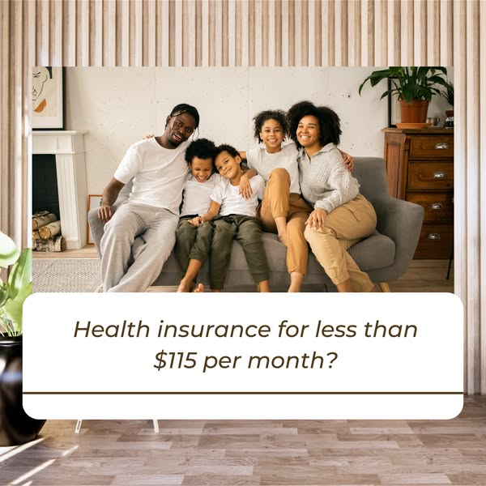
We can help you find an affordable health insurance plan. Plans may be available for less than $115 per month premium. Click the link below to speak to a licensed insurance agent committed to finding you the best plan at the best rate. TRUSTEDHEALTHFINDER.COM Unlock Savings on Health Insurance Learn more
Array Medical Center Surprise · 1 ads · longest 529 days · no destination link captured
{kind=link}
Struggling with chronic pain, stiffness, or mobility issues? Finding it hard to enjoy life without discomfort? We have solutions that could help—and treatment may be covered by your health insurance! Experience: ✅ Reduced Pain & Inflammation ✅ Improved Mobility & Flexibility ✅ Relief for Conditions like Arthritis, Neuropathy & Joint Pain ✅ Less Reliance on Medications ✅ A Better, More Active Life! … and more! Stop suffering in silence! Click "Get Offer" below to see if you qualify and start your journey today! FB.ME Accepting Insurance For Pain Relief Get offer
USA Health Insurance Rates · 2 ads · longest 494 days · usbluequotes.com
{kind=link}
🚨𝗗𝗢𝗡'𝗧 𝗪𝗔𝗜𝗧! 𝗧𝗛𝗘𝗦𝗘 𝟯 𝗥𝗘𝗔𝗦𝗢𝗡𝗦 𝗖𝗢𝗨𝗟𝗗 𝗦𝗔𝗩𝗘 𝗬𝗢𝗨 𝗧𝗛𝗢𝗨𝗦𝗔𝗡𝗗𝗦🚨 You may qualify for a LOW-COST health program in 2024 that can save you thousands! Starting at just $10/month, you could get over $5,000 in health services for a fraction of the cost. Don't miss out – it's FREE to apply, but only available this week. Hurry… CONFIRM YOUR ELIGIBILITY HERE! ✅ 0:00 / 0:46 USBLUEQUOTES.COM 💸$10 Health Plans. Save $5,000. Click Here!👉 Learn more
{kind=link}
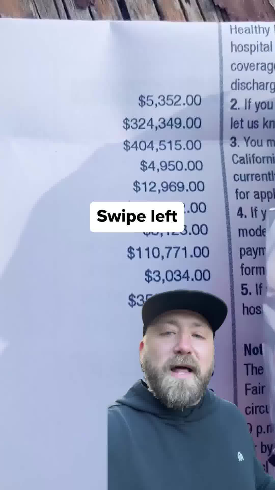
🚨𝗗𝗢𝗡'𝗧 𝗪𝗔𝗜𝗧! 𝗧𝗛𝗘𝗦𝗘 𝟯 𝗥𝗘𝗔𝗦𝗢𝗡𝗦 𝗖𝗢𝗨𝗟𝗗 𝗦𝗔𝗩𝗘 𝗬𝗢𝗨 𝗧𝗛𝗢𝗨𝗦𝗔𝗡𝗗𝗦🚨 You may qualify for a LOW-COST health program in 2025 that can save you thousands! Starting at just $10/month, you could get over $5,000 in health services for a fraction of the cost. Don't miss out – it's FREE to apply, but only available this week. Hurry… CONFIRM YOUR ELIGIBILITY HERE! ✅ 0:00 / 0:46 USBLUEQUOTES.COM 💸$10 Health Plans. Save $5,000. Click Here!👉 Learn more
Atlas Health & Life · 2 ads · longest 387 days · atlashealthandlife.com
{kind=link}
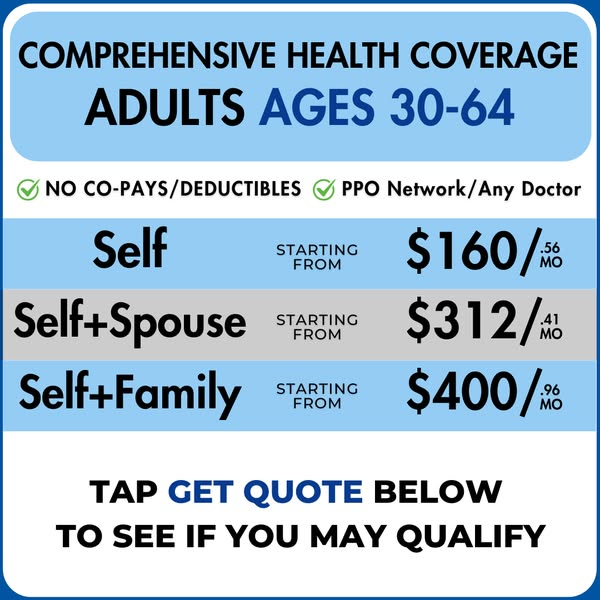
🌟 Upgrade Your Health, Save Money! - Claim Your Free Quote NOW! 🌟 Do you crave quality health coverage without breaking the bank? Our exclusive PPO Health Insurance Plans with ZERO deductibles or copays have got you covered! Say goodbye to compromise and hello to a healthier, happier you. 💪 Don't miss this limited-time offer - take action today and secure your spot for a brighter future. It's time to prioritize your well-being and financial stability - let us show you how! Click the link to get started now. 🚀 🔹 Not for those on Medicaid 🔹 Comprehensive PPO health insurance with no deductibles or copays 🔹 Save more than traditional ACA plans - especially if you're a high income earner 🔹 Exper
{kind=link}
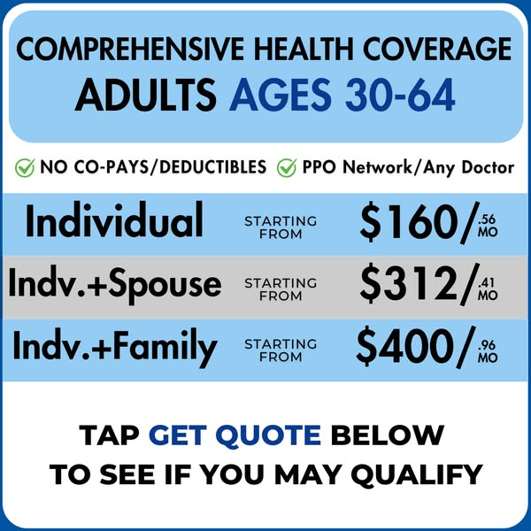
🌟 Upgrade Your Health, Save Money! - Claim Your Free Quote NOW! 🌟 Do you crave quality health coverage without breaking the bank? Our exclusive PPO Health Insurance Plans with ZERO deductibles or copays have got you covered! Say goodbye to compromise and hello to a healthier, happier you. 💪 Don't miss this limited-time offer - take action today and secure your spot for a brighter future. It's time to prioritize your well-being and financial stability - let us show you how! Click the link to get started now. 🚀 🔹 Not for those on Medicaid 🔹 Comprehensive PPO health insurance with no deductibles or copays 🔹 Save more than traditional ACA plans - especially if you're a high income earner 🔹 Exper
Atticare · 1 ads · longest 345 days · no destination link captured
{kind=link}
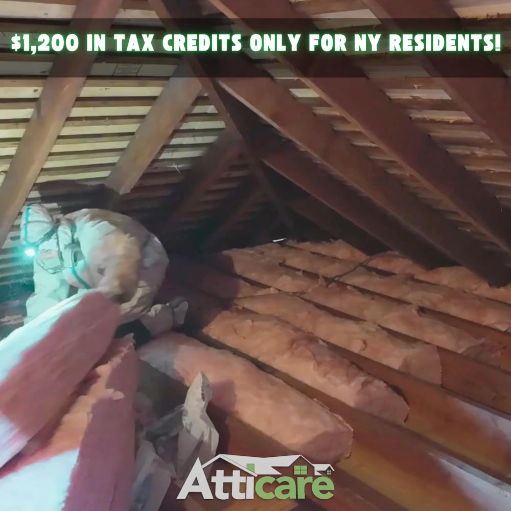
Hey New York Homeowners! 📣 Tap into NY’s $1,200 Insulation Tax Credit and transform your attic—no more rodents, no more drafts! At Atticare, we’ll: 🐭 Rodent-Proof & Remove: Seal entry points, eliminate pests, and keep them out for good 🔨 Upgrade Insulation: Improve comfort, lower energy bills, and stop drafts 💧 Moisture Control & Air Sealing: Prevent mold, rot, and wasted energy Join hundreds of satisfied homeowners—400+ ⭐️⭐️⭐️⭐️⭐️ reviews on Google and Diamond Certified excellence. Reply “YES” and we’ll send you a link to book your free consultation! 📆✨ Act now and check if your zip code qualifies for a $500 discount! 0:00 / 0:57 FB.ME $1,200 Insulation Tax Credit for NY Homes Sign up
Insurance Benefits of America · 1 ads · longest 304 days · no destination link captured
{kind=link}
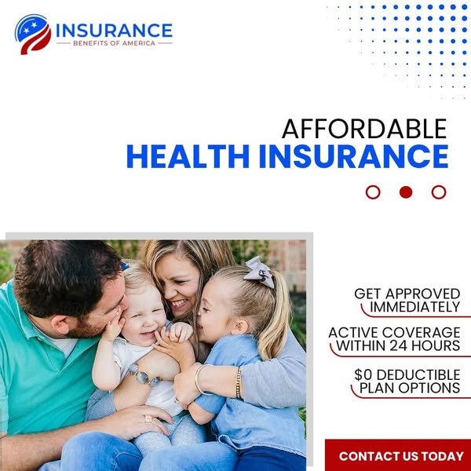
Ensure you and your family are protected with comprehensive health insurance. 🚀 Fast Approval Process! ⏳ Coverage Starts Within 24 Hours 🩺 Coverage for All Pre-Existing Conditions Guaranteed 🥇 Partnered with Top A+ Rated Insurance Companies 🆓 $0 Deductible Plans 🔍 PPO Networks – No Referrals Necessary 🎁 Optional Packages: Dental, Vision, and Life Insurance 📞 Talk to a Licensed Agent in Your State Today! Get Approval Today! Insurance company Send message
Compare Health Quotes · 5 ads · longest 284 days · no destination link captured
{kind=link}
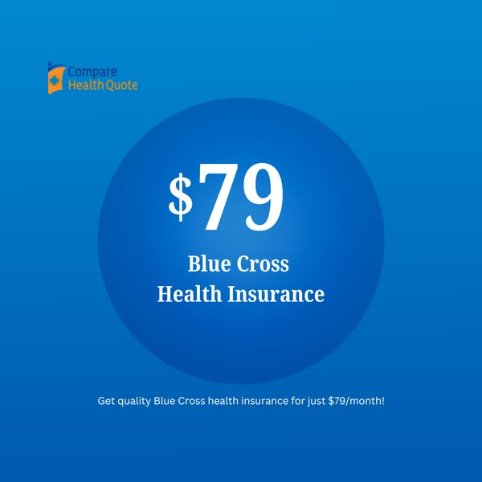
Looking for affordable health insurance? Get Blue Cross coverage as low as $79/month! Fast, free quotes are just a click away. Secure your health today! Blue Cross Health Insurance for Just $79/Month! Learn More

Looking for affordable health insurance? Get Blue Cross coverage as low as $79/month! Fast, free quotes are just a click away. Secure your health today!

Looking for affordable health insurance? Get Blue Cross coverage as low as $79/month! Fast, free quotes are just a click away. Secure your health today!
{kind=link}
Looking for affordable health insurance? Get Blue Cross coverage as low as $79/month! Fast, free quotes are just a click away. Secure your health today!
{kind=link}
Looking for affordable health insurance? Get Blue Cross coverage as low as $79/month! Fast, free quotes are just a click away. Secure your health today!
Forever Family Coverage · 4 ads · longest 271 days · aca.foreverfamilycoverage.com
{kind=link}
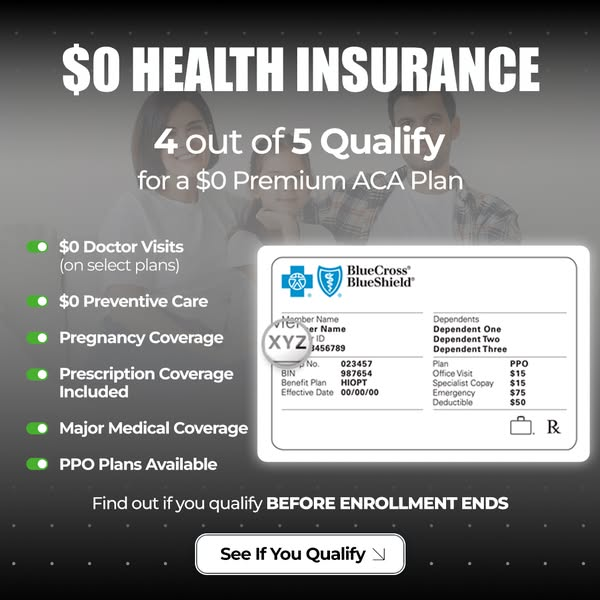
The Affordable Care Act allows 4 out of 5 Americans to have HIGHLY REDUCED COST or NO COST HEALTH INSURANCE! See if you qualify by clicking below! Ever thought, “There’s no way health insurance can actually be free, right?” We get it. It sounds like a scam… but it’s not. Thanks to ACA subsidies, thousands of people are now legally getting $0 health plans—with real coverage that protects you when life hits. No pressure. No pushy sales calls. Just honest help from someone who understands how confusing this stuff can be. ✅ Keep your favorite doctors (in many cases) ✅ Covers emergencies, prescriptions & more ✅ 100% legit with no hidden bills later If you’ve ever said, “I just want to know my fam
{kind=link}
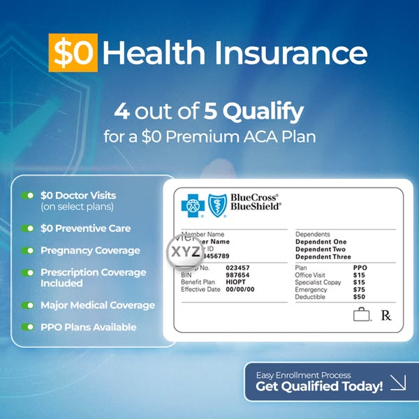
The Affordable Care Act allows 4 out of 5 Americans to have HIGHLY REDUCED COST or NO COST HEALTH INSURANCE! See if you qualify by clicking below! Ever thought, “There’s no way health insurance can actually be free, right?” We get it. It sounds like a scam… but it’s not. Thanks to ACA subsidies, thousands of people are now legally getting $0 health plans—with real coverage that protects you when life hits. No pressure. No pushy sales calls. Just honest help from someone who understands how confusing this stuff can be. ✅ Keep your favorite doctors (in many cases) ✅ Covers emergencies, prescriptions & more ✅ 100% legit with no hidden bills later If you’ve ever said, “I just want to know my fam

The Affordable Care Act allows 4 out of 5 Americans to have HIGHLY REDUCED COST or NO COST HEALTH INSURANCE! See if you qualify by clicking below! Ever thought, “There’s no way health insurance can actually be free, right?” We get it. It sounds like a scam… but it’s not. Thanks to ACA subsidies, thousands of people are now legally getting $0 health plans—with real coverage that protects you when life hits. No pressure. No pushy sales calls. Just honest help from someone who understands how confusing this stuff can be. ✅ Keep your favorite doctors (in many cases) ✅ Covers emergencies, prescriptions & more ✅ 100% legit with no hidden bills later If you’ve ever said, “I just want to know my fam
{kind=link}
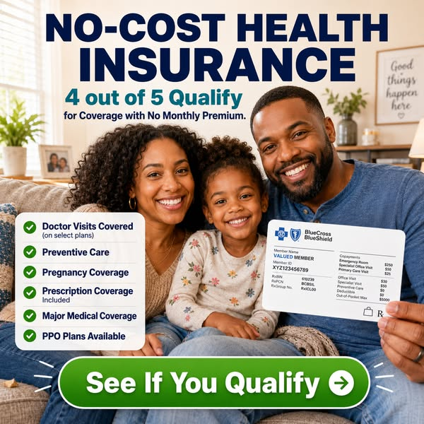
The Affordable Care Act allows 4 out of 5 Americans to have HIGHLY REDUCED COST or NO COST HEALTH INSURANCE! See if you qualify by clicking below! Ever thought, “There’s no way health insurance can actually be free, right?” We get it. It sounds like a scam… but it’s not. Thanks to ACA subsidies, thousands of people are now legally getting $0 health plans—with real coverage that protects you when life hits. No pressure. No pushy sales calls. Just honest help from someone who understands how confusing this stuff can be. ✅ Keep your favorite doctors (in many cases) ✅ Covers emergencies, prescriptions & more ✅ 100% legit with no hidden bills later If you’ve ever said, “I just want to know my fam
ACA Community Center · 6 ads · longest 260 days · no destination link captured
{kind=link}
$0 Health Insurance Plans Now Available In Your Area. See If You Qualify Today! FREE Health Insurance See if you qualify Apply Now
{kind=link}
$0 Health Insurance Plans Now Available In Your Area. See If You Qualify Today! FREE Health Insurance See if you qualify Apply Now
{kind=link}
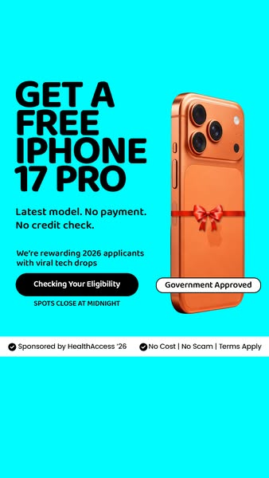
$0 Health Insurance Plans Now Available In Your Area. See If You Qualify Today! FREE Health Insurance See if you qualify Apply Now
{kind=link}
$0 Health Insurance Plans Now Available In Your Area. See If You Qualify Today! FREE Health Insurance See if you qualify Apply Now
{kind=link}
$0 Health Insurance Plans Now Available In Your Area. See If You Qualify Today! FREE Health Insurance See if you qualify Apply Now
{kind=link}
$0 Health Insurance Plans Now Available In Your Area. See If You Qualify Today! FREE Health Insurance See if you qualify Apply Now
All-Weather Seal Co., Inc. · 1 ads · longest 248 days · no destination link captured
{kind=link}
🏠 50 MICHIGAN HOMEOWNERS NEEDED 🏠 Get full home window replacement for as low as $97/mnth* through our 2026 NS Program!. ✅ With lifetime warranty! ✅ Save on energy bills! ✅ Free In-Home Estimate! Why Choose Us? ✅ A+ BBB Rating! ✅ In-House Employees! ✅ 45+ Years in Business! ➕ Eligible homeowners receive 💰 Home Improvement Tax Credit 💰 *Avg. 13 Windows Tap [LEARN MORE] to see if you qualify! FB.ME Full Home Window Replacement for as low as $97/mnth! Check your Eligibility! Learn more
Self Employed Health Insurance · 35 ads · longest 246 days · go.selfemployedhi.com
{kind=link}
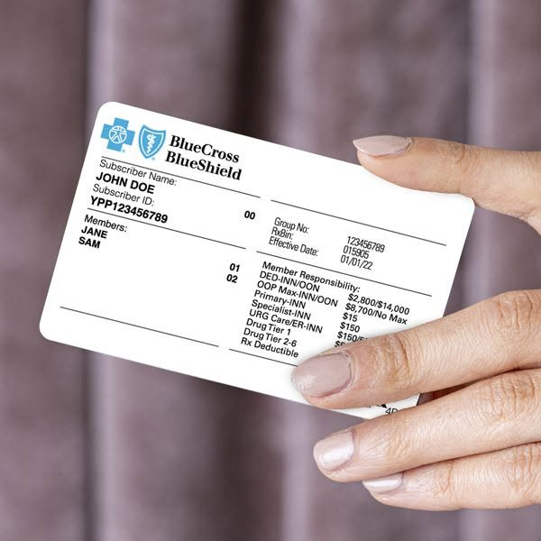
Self-Employed? Own Your Health Coverage in 2025 If you’re a small business owner or independent contractor, finding the right health insurance shouldn’t be complicated. The new 2025 private health plans are here to give you more control and better benefits: 🔹 Affordable premiums that fit your budget 🔹 Access to top-rated doctors with PPO flexibility 🔹 Customized plans for entrepreneurs – not cookie-cutter coverage 🔹 Simple application, no open enrollment limits 🚫 These plans are not designed for those seeking Medicare, Medicaid, ACA, or Medicare Supplement coverage. Find out what real freedom in health insurance looks like. Let’s get you covered! Click below to to learn more Now! FB.ME For S
{kind=link}
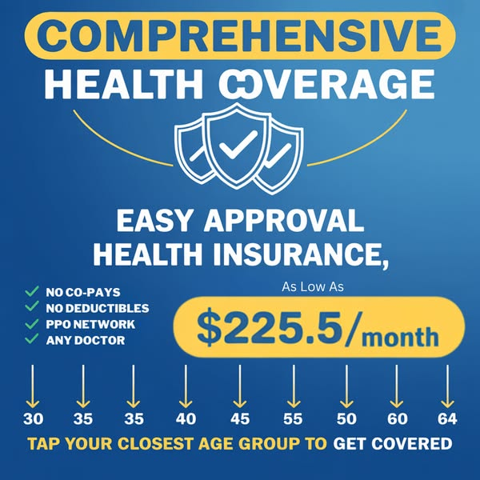
Self-Employed? Own Your Health Coverage in 2025 If you’re a small business owner or independent contractor, finding the right health insurance shouldn’t be complicated. The new 2025 private health plans are here to give you more control and better benefits: 🔹 Affordable premiums that fit your budget 🔹 Access to top-rated doctors with PPO flexibility 🔹 Customized plans for entrepreneurs – not cookie-cutter coverage 🔹 Simple application, no open enrollment limits 🚫 These plans are not designed for those seeking Medicare, Medicaid, ACA, or Medicare Supplement coverage. Find out what real freedom in health insurance looks like. Let’s get you covered! Click below to to learn more Now! FB.ME For S
{kind=link}
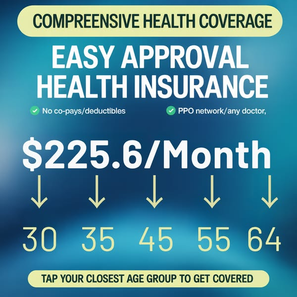
Self-Employed? Own Your Health Coverage in 2025 If you’re a small business owner or independent contractor, finding the right health insurance shouldn’t be complicated. The new 2025 private health plans are here to give you more control and better benefits: 🔹 Affordable premiums that fit your budget 🔹 Access to top-rated doctors with PPO flexibility 🔹 Customized plans for entrepreneurs – not cookie-cutter coverage 🔹 Simple application, no open enrollment limits 🚫 These plans are not designed for those seeking Medicare, Medicaid, ACA, or Medicare Supplement coverage. Find out what real freedom in health insurance looks like. Let’s get you covered! Click below to to learn more Now! FB.ME For S
{kind=link}
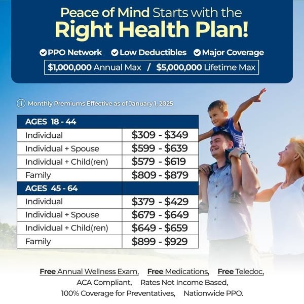
Self-Employed? Own Your Health Coverage in 2025 If you’re a small business owner or independent contractor, finding the right health insurance shouldn’t be complicated. The new 2025 private health plans are here to give you more control and better benefits: 🔹 Affordable premiums that fit your budget 🔹 Access to top-rated doctors with PPO flexibility 🔹 Customized plans for entrepreneurs – not cookie-cutter coverage 🔹 Simple application, no open enrollment limits 🚫 These plans are not designed for those seeking Medicare, Medicaid, ACA, or Medicare Supplement coverage. Find out what real freedom in health insurance looks like. Let’s get you covered! Click below to to learn more Now! FB.ME For S
{kind=link}
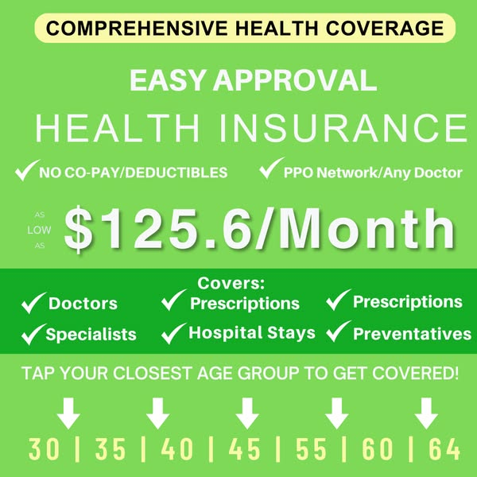
Self-Employed? Own Your Health Coverage in 2025 If you’re a small business owner or independent contractor, finding the right health insurance shouldn’t be complicated. The new 2025 private health plans are here to give you more control and better benefits: 🔹 Affordable premiums that fit your budget 🔹 Access to top-rated doctors with PPO flexibility 🔹 Customized plans for entrepreneurs – not cookie-cutter coverage 🔹 Simple application, no open enrollment limits 🚫 These plans are not designed for those seeking Medicare, Medicaid, ACA, or Medicare Supplement coverage. Find out what real freedom in health insurance looks like. Let’s get you covered! Click below to to learn more Now! FB.ME For S

JUST PASSED… NEW 2025 Health Insurance Plans designed for Small Business Owners, Self Employed Professionals, Independent Contractors, and Freelancers… Navigating health insurance can be overwhelming, but we’ve got you covered…. Our comprehensive health insurance plans are designed specifically for business owners, self employer professionals, and freelancers like you, providing flexible coverage options that fit your unique needs and budget. Whether you need individual or family coverage, we offer affordable plans with great benefits. ✅Lower premiums and better coverage than ACA plans ✅No Out-of-Network ✅You can keep your doctor ✅No Copays and No Deductibles! This offer IS NOT intended for
{kind=link}
JUST PASSED… NEW 2024 Health Insurance Plans designed for Small Business Owners, Self Employed Professionals, Independent Contractors, and Freelancers… Navigating health insurance can be overwhelming, but we’ve got you covered…. Our comprehensive health insurance plans are designed specifically for business owners, self employer professionals, and freelancers like you, providing flexible coverage options that fit your unique needs and budget. Whether you need individual or family coverage, we offer affordable plans with great benefits. ✅Lower premiums and better coverage than ACA plans ✅No Out-of-Network ✅You can keep your doctor ✅No Copays and No Deductibles! This offer IS NOT intended for
{kind=link}
JUST PASSED… NEW 2024 Health Insurance Plans designed for Small Business Owners, Self Employed Professionals, Independent Contractors, and Freelancers… Navigating health insurance can be overwhelming, but we’ve got you covered…. Our comprehensive health insurance plans are designed specifically for business owners, self employer professionals, and freelancers like you, providing flexible coverage options that fit your unique needs and budget. Whether you need individual or family coverage, we offer affordable plans with great benefits. ✅Lower premiums and better coverage than ACA plans ✅No Out-of-Network ✅You can keep your doctor ✅No Copays and No Deductibles! This offer IS NOT intended for
GROWING DAYS CHILDCARE AND LEARNING CENTER · 1 ads · longest 232 days · no destination link captured
{kind=link}
🚨 NOW ENROLLING – VPK & KINDERGARTEN 🚨 It’s that time! If you’re searching for the best place for your child to learn, grow, and thrive—your search starts here. Since inception, Growing Days Learning Center has been a high-performing school and we continue to reach new heights in education, excellence, and student success. ✨ Open Enrollment Now ✨ Tours Available Daily ✨ Limited Spots Available 📞 Call today or click the link in bio to Schedule your tour. Secure your child’s spot. Because their future deserves the best start. #miamilakespreschool #miamilakesleadersineducation #vpkmiamilakes #kindergartenmiamilakes #freevpkmiamilakes GROWING DAYS CHILDCARE AND LEARNING CENTER We are a high perf
Daniel M Smith HealthMarkets Insurance · 1 ads · longest 211 days · fb.com
{kind=link}
CYCLERIE · 1 ads · longest 207 days · store.cyclerie.net
{kind=link}
🚨 Aventon Pace 4 Step-Through Sale is ON at Cyclerie! Get the silky-smooth cruiser everyone’s raving about: • $200 OFF the regular price • FREE Fenders + FREE Rear Rack (perfect for errands, beach trips, or just cruising around town) • + $225 Colorado e-bike Tax Credit for eligible CO residents (stacks on top for even more savings!) The Pace 4 delivers that natural, responsive ride with its 500W motor + torque sensor, up to 28 mph Class 3 speeds, comfy step-through design, and smart features. Ideal for weekend adventures, commuting, or effortless fun on the trails and paths. Limited time while supplies last—don’t sleep on this one! Head to CYCLERIE.NET to grab yours today or swing by the sho
CoverME.gov · 1 ads · longest 175 days · no destination link captured
{kind=link}
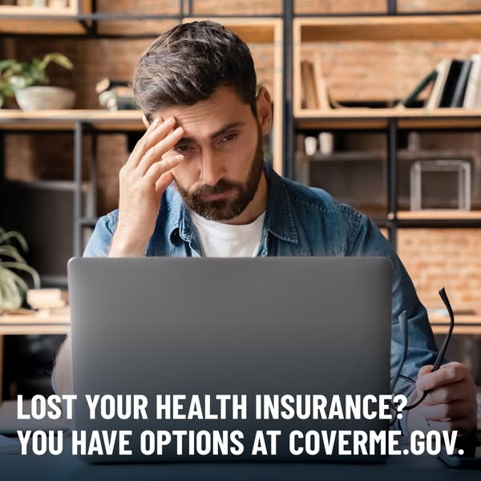
When you lose your health insurance, you don’t have to wait until Open Enrollment. Act now to stay covered for what’s next with a Special Enrollment Period at CoverME.gov. COVERME.GOV/SEP Enroll now at CoverME.gov. Open Enrollment for 2026 has ended. You may be eligible to enroll in health insurance outside of Open Enrollment, or enroll with an earlier effective date, by qualifying for a Special Enrollment Period (SEP). Qualifying Life Events In order to qualify for a Special Enrollment Period you must first b... Sign up
Hunter Life & Health · 1 ads · longest 162 days · www.hunterlifehealth.com

Just released — new PPO plans with real coverage and zero nonsense. These aren't your typical health insurance plans. ✅ Low deductibles ✅ $0 prescriptions, checkups, & 24/7 teledoc ✅ Massive nationwide networks ✅ Pregnancy & catastrophic care included ✅ No business or 1099 required to qualify Whether you're covering just yourself or your whole family, these plans are built to actually protect you — without the usual headaches. Quick approval. Easy application. No surprises. 👇 Tap below to check availability in your area 👇 0:00 / 0:24 HTTPS://WWW.HUNTERLIFEHEALTH.COM/SURVEY These New Health Plans Just Dropped — Most People Have No Idea They Exist New PPO plans. Massive benefits. Check if you
Euro-Tech, Inc. · 1 ads · longest 147 days · no destination link captured
{kind=link}
50 HOMEOWNERS NEEDED 🏠 Upgrade your home with NEW Energy-Efficient Windows starting from $147/mnth through our 2025 OFS Program ✅ Windows, all-inclusive! ✅ With Lifetime warranty! ✅ Save on energy bills! ✅ Free In-Home Estimate, no sales pressure. Eligible homeowners receive 💰 Home Improvement Tax Credit 💰 Tap [LEARN MORE] to see if you qualify!
Healthcare.com · 2 ads · longest 113 days · healthcare.com
{kind=link}
Looking for 2026 Kaiser Permanente health plans? You may be eligible for ACA Marketplace plans starting at just $50/month*. Check your ZIP code to see Kaiser Permanente options available in your area. 2026 Kaiser Permanente Plans From $50/Month* Check Eligibility Learn More
{kind=link}
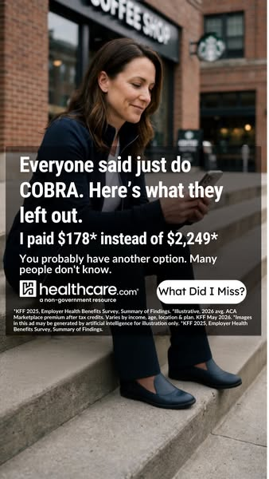
Many people leaving employer coverage default to COBRA because it feels safe and familiar. We see this every week at Healthcare.com. What the COBRA packet doesn't include: the average family plan runs $2,000+*/month. Many people switching from employer coverage may qualify for ACA Marketplace plans that may cost far less.* Whether one covers your specific providers depends on the plan — but that's exactly why we built Healthcare.com — so people have this information before they sign anything. If you've had a recent life change, you may be eligible to enroll in or change Marketplace coverage. HEALTHCARE.COM The Option Nobody Mentions When You Lose Job Coverage Compare your options before you
Presidio Healthcare · 1 ads · longest 95 days · presidiocare.com
{kind=link}
You take care of your health. Your insurance should reward that. Presidio Healthcare is licensed health insurance — not a government plan, not a ministry — priced fairly for healthy Texans who don't need the ACA to make it work. Get your free quote. PRESIDIOCARE.COM Not the ACA. Not a Sharing Ministry. Obamacare wasn't built for you. Sharing ministries are too uncertain. Done subsidizing a broken system? Presidio Healthcare is the alternative. No mandates, no ministries, no nonsense. It's real insurance for healthy people. Find out what healthy Texans are paying. Get Quote
Empire Solar Solutions · 7 ads · longest 85 days · save.empiresolarny.com
{kind=link}
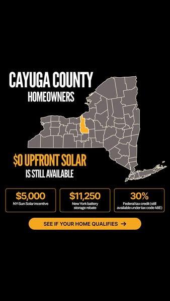
New York homeowners have access to an exclusive program that can: ✅ Reduce electric bills by up to 93%. ✅ Protect you from future rate increases. ✅ Start saving money immediately with no upfront costs. Switching to solar isn’t just affordable—it’s backed by some of the most generous incentives ever: $12,400 Federal Tax Credit (still available under a different tax code - 48E) $5,000 New York State Tax Credit Generous Rebates Up To $20,000 In Select Zip Codes That’s over $30,000 in available savings just for making the switch to clean, renewable energy. Why Go Solar? Not only will you save thousands, but solar gives you control over your energy costs. With warranties lasting up to 25 years, y
{kind=link}
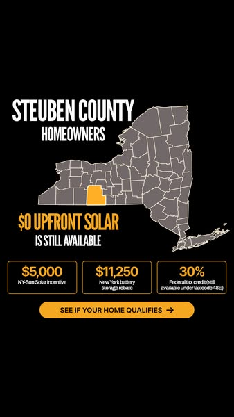
New York homeowners have access to an exclusive program that can: ✅ Reduce electric bills by up to 93%. ✅ Protect you from future rate increases. ✅ Start saving money immediately with no upfront costs. Switching to solar isn’t just affordable—it’s backed by some of the most generous incentives ever: $12,400 Federal Tax Credit (still available under a different tax code - 48E) $5,000 New York State Tax Credit Generous Rebates Up To $20,000 In Select Zip Codes That’s over $30,000 in available savings just for making the switch to clean, renewable energy. Why Go Solar? Not only will you save thousands, but solar gives you control over your energy costs. With warranties lasting up to 25 years, y

New York homeowners have access to an exclusive program that can: ✅ Reduce electric bills by up to 93%. ✅ Protect you from future rate increases. ✅ Start saving money immediately with no upfront costs. Switching to solar isn’t just affordable—it’s backed by some of the most generous incentives ever: $12,400 Federal Tax Credit (still available under a different tax code - 48E) $5,000 New York State Tax Credit Generous Rebates Up To $20,000 In Select Zip Codes That’s over $30,000 in available savings just for making the switch to clean, renewable energy. Why Go Solar? Not only will you save thousands, but solar gives you control over your energy costs. With warranties lasting up to 25 years, y
{kind=link}
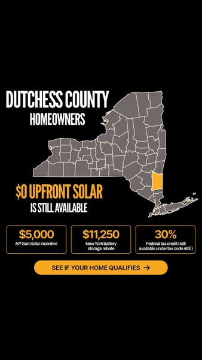
New York homeowners have access to an exclusive program that can: ✅ Reduce electric bills by up to 93%. ✅ Protect you from future rate increases. ✅ Start saving money immediately with no upfront costs. Switching to solar isn’t just affordable—it’s backed by some of the most generous incentives ever: $12,400 Federal Tax Credit (still available under a different tax code - 48E) $5,000 New York State Tax Credit Generous Rebates Up To $20,000 In Select Zip Codes That’s over $30,000 in available savings just for making the switch to clean, renewable energy. Why Go Solar? Not only will you save thousands, but solar gives you control over your energy costs. With warranties lasting up to 25 years, y
{kind=link}
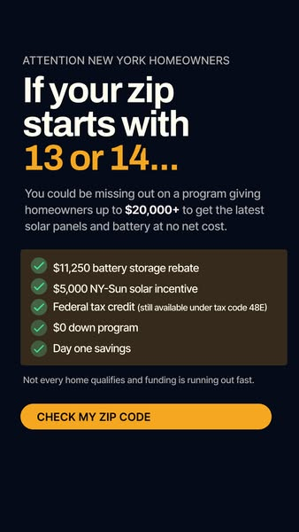
New York homeowners have access to an exclusive program that can: ✅ Reduce electric bills by up to 93%. ✅ Protect you from future rate increases. ✅ Start saving money immediately with no upfront costs. Switching to solar isn’t just affordable—it’s backed by some of the most generous incentives ever: $12,400 Federal Tax Credit (still available under a different tax code - 48E) $5,000 New York State Tax Credit Generous Rebates Up To $20,000 In Select Zip Codes That’s over $30,000 in available savings just for making the switch to clean, renewable energy. Why Go Solar? Not only will you save thousands, but solar gives you control over your energy costs. With warranties lasting up to 25 years, y
{kind=link}
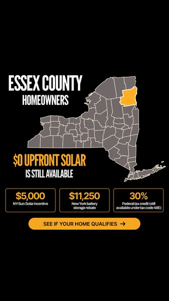
New York homeowners have access to an exclusive program that can: ✅ Reduce electric bills by up to 93%. ✅ Protect you from future rate increases. ✅ Start saving money immediately with no upfront costs. Switching to solar isn’t just affordable—it’s backed by some of the most generous incentives ever: $12,400 Federal Tax Credit (still available under a different tax code - 48E) $5,000 New York State Tax Credit Generous Rebates Up To $20,000 In Select Zip Codes That’s over $30,000 in available savings just for making the switch to clean, renewable energy. Why Go Solar? Not only will you save thousands, but solar gives you control over your energy costs. With warranties lasting up to 25 years, y
{kind=link}
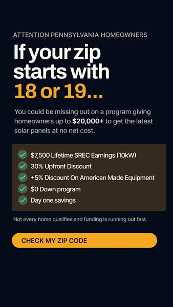
Pennsylvania homeowners have access to an exclusive program that can: ✅ Reduce electric bills by up to 93%. ✅ Protect you from future rate increases. ✅ Start saving money immediately with no upfront costs. Switching to solar isn't just affordable, it's backed by some of the most generous incentives available: 30% Federal Tax Credit (still available under a different tax code - 48E) $7,500 Average Lifetime SREC Earnings (10kW System) Additional 5% Discount On American Made Equipment $0 Down That's over $20,000 in available savings just for making the switch to clean, renewable energy. Why Go Solar? Not only will you save thousands, but solar gives you control over your energy costs. With warr
Future Fortress Insurance · 1 ads · longest 73 days · www.futurefortressinsurance.com
{kind=link}
🌟 Upgrade Your Health, Save Money! - Claim Your Free Quote NOW! 🌟 Do you crave quality health coverage without breaking the bank? Our exclusive PPO Health Insurance Plans with ZERO deductibles or copays have got you covered! Say goodbye to compromise and hello to a healthier, happier you. 💪 Don't miss this limited-time offer - take action today and secure your spot for a brighter future. It's time to prioritize your well-being and financial stability - let us show you how! Click the link to get started now. 🚀 🔹 Not for those on Medicaid 🔹 Comprehensive PPO health insurance with no deductibles or copays 🔹 Save more than traditional ACA plans - especially if you're a high income earner 🔹 Exper
Get Covered NJ · 4 ads · longest 72 days · no destination link captured
{kind=link}
Recently had a major life change or lost your health insurance? You may qualify for a Special Enrollment Period through #GetCoveredNJ. GETCOVERED.NJ.GOV See if you qualify. Find your health plan! Learn More
{kind=link}
If you recently had a major life event or lost your health insurance, compare plans and see if you qualify for health coverage through #GetCoveredNJ. 8 In 10 get financial help. GETCOVERED.NJ.GOV See if you qualify. Find your health plan! Learn More
{kind=link}
Recently had a major life change or lost your health insurance? Explore your coverage options today through #GetCoveredNJ. GETCOVERED.NJ.GOV See if you qualify. Find your health plan. Sign Up
{kind=link}
If you recently had a major life event or lost your health insurance, compare plans and see if you qualify for health coverage through #GetCoveredNJ. 8 In 10 get financial help. 0:00 / 0:05 GETCOVERED.NJ.GOV See if you qualify. Find your health plan! Learn More
STL Medicare Benefits · 1 ads · longest 68 days · no destination link captured
{kind=link}
Did your Missouri Medicaid (MO HealthNet) end? You’re not alone. Many Missourians are losing Medicaid due to renewal changes. The good news is you may still have options through HealthCare.gov, even if Medicaid ended. 👉 Request help and we’ll walk through your options. FB.ME Lost Missouri Medicaid? Local help reviewing HealthCare.gov options. See details
Health Plan Helpdesk · 1 ads · longest 67 days · no destination link captured
{kind=link}
Members of federally recognized tribes and ANCSA shareholders have coverage protections most people never hear about. If your household income falls between the federal poverty level, you can enroll in a zero cost-sharing plan — no deductibles, no copays, no coinsurance when you get care. Many enrollees also pay $0 per month after tax credits. You can also enroll any month of the year. No waiting for open enrollment. Click the link below to see if you qualify! 0:00 / 0:17 FB.ME Tribal Members Benefits $0 Health Insurance Learn more
Trust4Life · 2 ads · longest 66 days · no destination link captured
{kind=link}
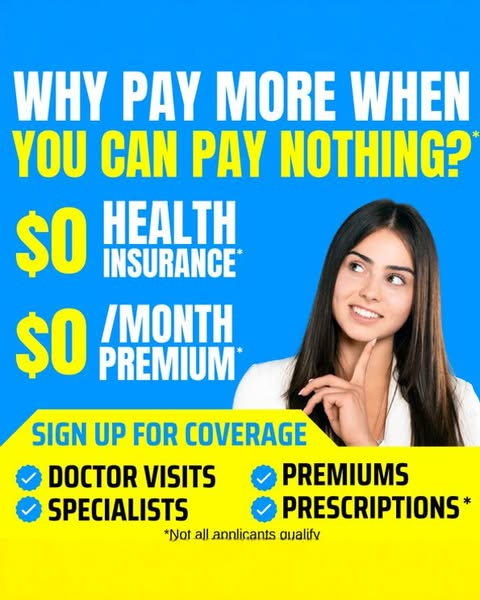
Are you looking for affordable, comprehensive health coverage? With the Affordable Care Act (ACA), you could qualify for a plan at NO COST! Protect your well-being with Affordable Care Act plans starting as low as $0/month. Don’t wait – check your eligibility now by clicking below 👇 Fast, Easy ACA Enrollment Find out if you qualify for $0 premium health insurance through ACA. Affordable coverage starts here! See Details
{kind=link}
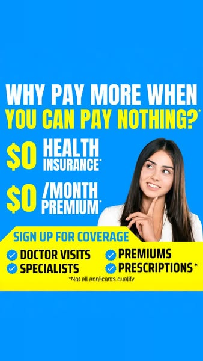
Are you looking for affordable, comprehensive health coverage? With the Affordable Care Act (ACA), you could qualify for a plan at NO COST! Protect your well-being with Affordable Care Act plans starting as low as $0/month. Don’t wait – check your eligibility now by clicking below 👇 Fast, Easy ACA Enrollment Find out if you qualify for $0 premium health insurance through ACA. Affordable coverage starts here! See Details
Global ADC Insurance · 1 ads · longest 65 days · no destination link captured
{kind=link}
💙 Tu salud no debería esperar. Miles de familias podrían calificar para seguro médico desde $0 al mes. Descubre si eres elegible para: ✅ Obamacare (ACA) ✅ Seguro de Vida ✅ Dental ✅ Visión Te guiamos paso a paso, sin complicaciones y en español. 📞 Llama hoy: 1-800-291-1192 📲 WhatsApp: (786) 520-5757 0:00 / 0:40 📞 1-800-291-1192 Asesoría personalizada en español para seguros de salud, vida, dental y visión. Call now
Better Choice Health Plans · 1 ads · longest 62 days · no destination link captured
{kind=link}
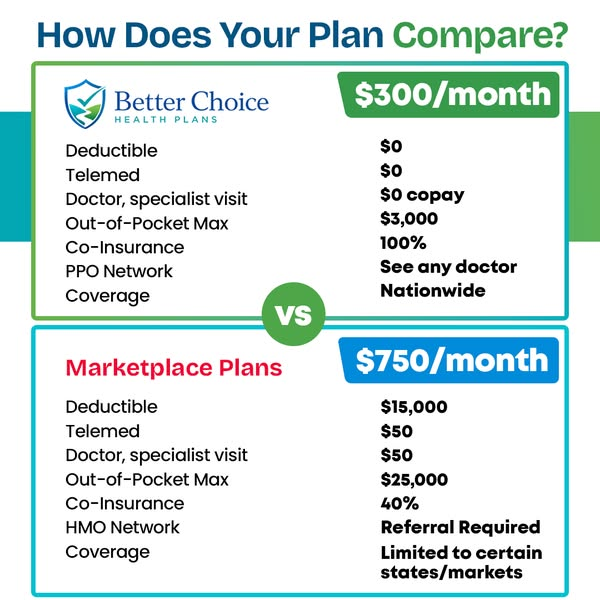
Health insurance costs have increased again this year, but many individuals and families may still qualify for lower monthly premiums than they expect. If your Marketplace coverage has changed, you could be eligible for new savings or better plan options. A quick review can help you find out if you can reduce your costs or get improved coverage without increasing your monthly payment. FB.ME You May Be Overpaying for Health Insurance Click 'Learn more' To Get Started Learn more
Insurance Medics Health · 1 ads · longest 55 days · no destination link captured

Uninsured? Lost your job coverage? Self-employed? You may qualify for a health insurance plan with $0 monthly premiums through the ACA Marketplace. Insurance Medics is a local Florida brokerage with bilingual agents ready to find you the best plan — at no cost to you. We handle everything same-day. ✅ $0 Premium plans available ✅ Local Florida agents ✅ English, Spanish & Arabic support ✅ Same-day enrollment Florida Health Insurance — Plans Starting at $0/Month Licensed Florida insurance brokerage. Free quotes, no cost to you. Get Quote
Jay Insurance · 1 ads · longest 50 days · no destination link captured
{kind=link}
Finding affordable health insurance doesn't have to be complicated. Whether you're self-employed, between jobs, or simply exploring better coverage, GEL Health Advisors helps you compare plans that fit your needs and your budget. ✔ Individual & Family Health Insurance ✔ Marketplace (ACA) Plans ✔ Medicare Guidance Available 📞 Call today for personalized help: (678) 902-7828 👉 Click on "Sign Up" to get more information. FB.ME Protect What Matters Most Sign up
Private Health Care · 4 ads · longest 47 days · privatehealthcareoptions.com
Landing page: Compare Affordable {state} Health Insurance Plans · prices on page: $0, $148/mo, $99/mo, $180/mo, $165/mo, $120/mo, $210/mo, $342
{kind=link}
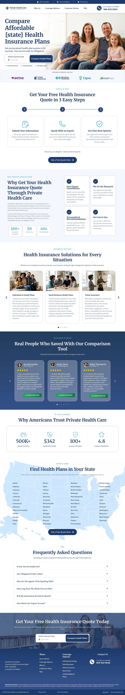
{kind=link}
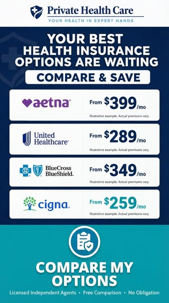
Your best health insurance options are waiting! Compare & save! 🏥⚡ Stop overpaying for health coverage! Private Health Care compares top carriers side-by-side so you find the perfect plan at the best price—all in one place! 🏥 Aetna: From $399/mo 🏥 UnitedHealthcare: From $289/mo 🏥 Blue Cross Blue Shield: From $349/mo 🏥 Cigna: From $259/mo ✅ Licensed independent agents 💰 Free comparison 🔒 No obligation *Illustrative examples. Actual premiums vary.* Your perfect plan is one click away! PRIVATEHEALTHCAREOPTIONS.COM Compare & Save - Free Quote Now! Get Quote
{kind=link}
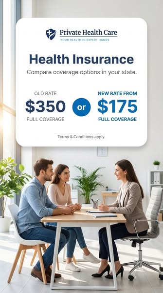
Full coverage health insurance from just $175 a month. Cut your rate in half today! 💰 Private Health Care compares coverage options in your state so you never overpay for the same protection again. ✅ Old rate: $350/mo full coverage ✅ New rate: from $175/mo full coverage ✅ Real licensed agents who do all the work for you ✅ Zero spam. Your data never gets sold. Your health is in expert hands. Compare and save today. 🏥 👉 Get your FREE comparison now. No obligation required! PRIVATEHEALTHCAREOPTIONS.COM Compare & Save - Free Quote Now! Get Quote
{kind=link}
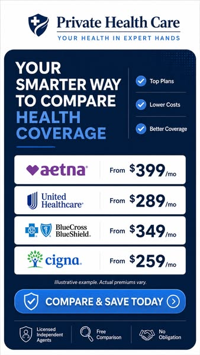
Top providers. Low monthly rates. Expert guidance. Health plans starting at $259 a month. 🏥 Cigna $259 | United $289 | BCBS $349 | Aetna $399. Compare your options now. No obligation! PRIVATEHEALTHCAREOPTIONS.COM Top Health Plans Starting at $259 Get Quote
{kind=link}
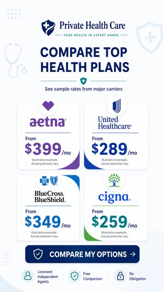
Top health plans starting at just $259 a month. Compare and save today! 💰 Private Health Care gives you top providers, low monthly rates and expert guidance all in one place. Licensed independent agents do all the work for you. Free. No obligation. 📍 Cigna from $259/mo 📍 United Healthcare from $289/mo 📍 BlueCross BlueShield from $349/mo 📍 Aetna from $399/mo Your health is in expert hands. Compare top plans and save today. 🏥 👉 Compare your options now. Free. Licensed agents. No obligation! PRIVATEHEALTHCAREOPTIONS.COM Top Health Plans Starting at $259 a Month. Compare Now Get Quote
James' Lifestyle & Fitness with HealthCare.gov · 1 ads · longest 46 days · ad.doubleclick.net
{kind=link}
#Ad Moving comes with a lot of updates — including having to possibly update your health coverage. If you’ve recently moved or experienced another life change, you may be eligible to enroll in a health plan at HealthCare.gov. In fact, 4 out of 5 customers can find a health plan for $21 or less per month with financial help. And all plans cover doctor visits, prescriptions, emergency care and more. Don’t wait! There are many ways to qualify, and there’s limited time to enroll during this Special Enrollment Period. Click the link in my bio or visit HealthCare.gov today. #HealthCareGov #HomeSweetHome #NewHome #HealthCare HealthInsurance 0:00 / 0:49 AD.DOUBLECLICK.NET James' Lifestyle & Fitness
Grace Lemire with HealthCare.gov · 1 ads · longest 46 days · ad.doubleclick.net
{kind=link}
#ad I can’t believe it’s been a whole year since I moved to Florida 🥹I just renewed my lease at my apartment and it has me thinking so much about making the move. Moving and need to find new health coverage? You may be eligible to enroll in a new health plan at HealthCare.gov. There are many ways to qualify so click the link in my bio or visit HealthCare.gov today. #HealthCareGov 0:00 / 0:37 AD.DOUBLECLICK.NET Grace Lemire Sign up
ACA Health Coverage Help with Sherell · 1 ads · longest 36 days · no destination link captured
{kind=link}
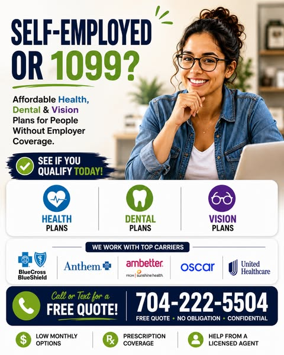
🩺 Need health insurance but don't have coverage through an employer? Whether you're working, self-employed, a 1099 worker, between jobs, or recently lost coverage, I can help you explore your options for: ✅ ACA Marketplace Health Insurance 🦷 Dental Plans 👓 Vision Plans ⭐ Dental & Vision options with no waiting periods available Get help from a licensed insurance agent and see what coverage may fit your needs and budget. 📞 Call or text 704-222-5504 or click below for a quick quote. Paying Too Much for Health Insurance? Get Quote
Health Mutual Network Insurance Solutions · 1 ads · longest 32 days · no destination link captured
{kind=link}
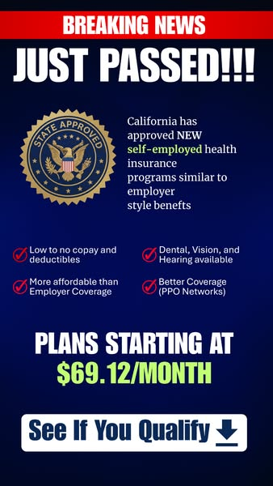
BREAKING UPDATE — JUST HAPPENED - Premiums are changing fast — and not in the way most people expect. 👇 Yes, rates are going up nationwide as subsidies shrink, carriers reprice plans, and Congress already decided what subsidies will look like. But here’s what most people don’t realize 👇 Not everyone is paying more. Right now, I’m seeing people lock in lower monthly costs simply by updating their information: Projected Income Household size Age ZIP code Once that’s updated, the results are all over the board — in a good way: Silver plan members switching to Bronze and saving big PPO members moving to HMO for better pricing Households qualifying for more subsidy than last year Some dropping in
Health Revolution · 4 ads · longest 31 days · www.healthrevolution.net
{kind=link}
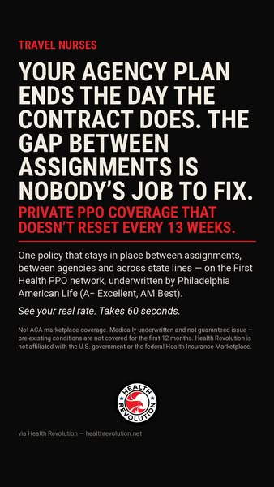
Agency coverage ends the day the contract does — and the gap between assignments is nobody's job to fix. Health Revolution writes private PPO plans that stay in place between assignments, between agencies, and across state lines. Coverage on the First Health PPO network, underwritten by Philadelphia American Life (A− Excellent, AM Best). Answer a few questions and see the actual rate from our rate table in about 60 seconds. No phone call required. Not ACA marketplace coverage. Medically underwritten and not guaranteed issue — pre-existing conditions are not covered for the first 12 months. Health Revolution is a licensed insurance agency and is not affiliated with the U.S. government or the
{kind=link}
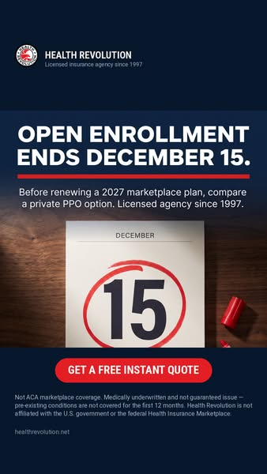
The marketplace closes December 15. After that the plan is locked for the year, whether it was chosen or auto-assigned. Private PPO plans have no enrollment window. Before renewing a 2027 marketplace plan, it's worth seeing what a private option prices at — real numbers, about 60 seconds, no call. Health Revolution — licensed insurance agency since 1997. Not ACA marketplace coverage. Medically underwritten and not guaranteed issue — pre-existing conditions are not covered for the first 12 months. Not affiliated with the U.S. government or the federal Health Insurance Marketplace. Open enrollment ends Dec 15 Free instant quote Get Quote
{kind=link}
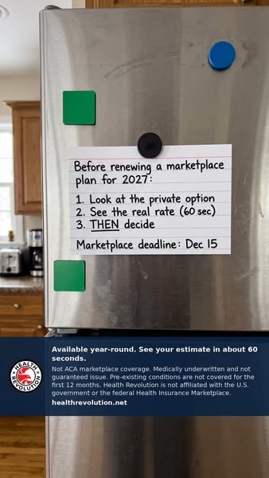
Marketplace open enrollment runs November 1 to December 15 for January 1 coverage. A lot of people renew whatever they had and find out the 2027 price later. There is another option worth looking at first. A private health plan with access to the First Health PPO network, one flat monthly premium, available year-round, and the rate shown to you before anyone picks up the phone. Enter your zip, ages and tobacco use and the estimate comes straight from our current rate table, with the deductible, benefit limits and exclusions laid out next to it. Plans are medically underwritten, not guaranteed issue, and pre-existing conditions are not covered for the first 12 months. If it is not a fit, a li

Marketplace open enrollment runs November 1 to December 15 for January 1 coverage. A lot of people renew whatever they had and find out the 2027 price later. There is another option worth looking at first. A private health plan with access to the First Health PPO network, one flat monthly premium, available year-round, and the rate shown to you before anyone picks up the phone. Enter your zip, ages and tobacco use and the estimate comes straight from our current rate table, with the deductible, benefit limits and exclusions laid out next to it. Plans are medically underwritten, not guaranteed issue, and pre-existing conditions are not covered for the first 12 months. If it is not a fit, a li
Native American Insurance Specialists · 1 ads · longest 25 days · thrivehealthplans.com
{kind=link}
🚨 𝐀𝐓𝐓𝐍: 𝐍𝐚𝐭𝐢𝐯𝐞 𝐀𝐦𝐞𝐫𝐢𝐜𝐚𝐧𝐬 𝐰𝐢𝐭𝐡 𝐚 𝐂𝐃𝐈𝐁 𝐜𝐚𝐫𝐝! Qualify for a health insurance plan with zero out-of-pocket cost if your income is between 100%-300% of the federal poverty level. With Open Enrollment happening now, Native Americans can visit doctors outside of the IHS and will could pay low to $0 for covered services as long it’s in the network. Special health coverage protections and benefits for American Indians and are available for those who qualify. ✅ Tap 'Learn More' and take our short quiz to find out if you qualify! THRIVEHEALTHPLANS.COM Low-Cost Healthcare for Native Americans This website is owned and operated by Native American Insurance Specialists, a licensed insurance agency. Native
MetroPlusHealth · 2 ads · longest 24 days · no destination link captured
{kind=link}
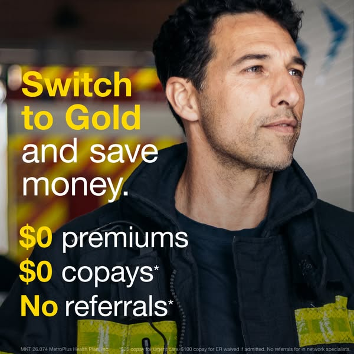
Does your health care plan cost too much and deliver too little? Switch to MetroPlusHealth Gold and save money. Upgrade to $0 copays MetroPlusHealth provides affordable health insurance to individuals, families and small businesses. Call now
{kind=link}
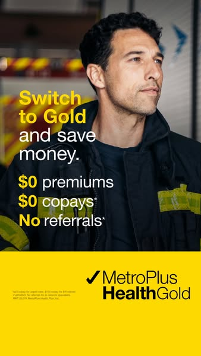
Join the thousands of City Employees who switched to paying $0 copays,* $0 premiums, and $0 deductibles Tired of paying copays at the doctor? MetroPlusHealth provides affordable health insurance to individuals, families and small businesses. Call now
GetCoverageFox · 1 ads · longest 24 days · coveragefox.com
{kind=link}
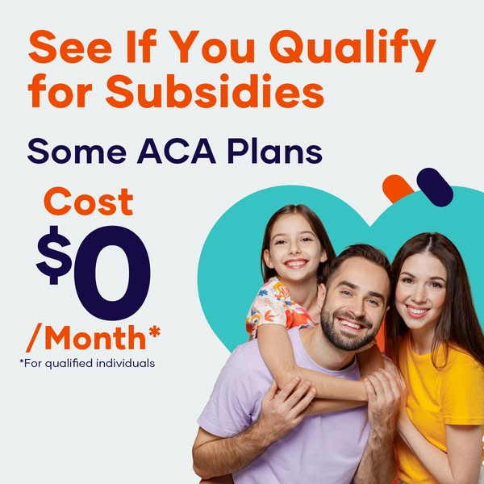
See if you qualify for $0/month health insurance. We'll help you compare plans and enroll. COVERAGEFOX.COM/PLANS See If You Qualify Compare Personalized Plans Get Quote
The Financial Solutions · 2 ads · longest 24 days · no destination link captured

🌸 September Enrollment Is Open! 5G Wi-Fi for only $9.99 - Stop Over Paying! Why pay full price for home internet when your household can qualify for subsidized high-speed Wi-Fi? Get approved for the official 2026 program and secure reliable, fast 5G Wi-Fi starting at just $9.99 a month. ✅ From $9.99 Per Month ✅ Instant Online Approval ✅ Available Nationwide ✅ Experience Ultra-Fast 5G Speeds Do not let this monthly allocation pass you by. Take 60 seconds to verify your household eligibility before the September 30th closeout. 👇 Check your eligibility now. Program window closes September 30th. High-Speed 5G Internet Program - $9.99/Mo See Details
{kind=link}
🌸 September Enrollment Is Open! 5G Wi-Fi for only $9.99 - Stop Over Paying! Why pay full price for home internet when your household can qualify for subsidized high-speed Wi-Fi? Get approved for the official 2026 program and secure reliable, fast 5G Wi-Fi starting at just $9.99 a month. ✅ From $9.99 Per Month ✅ Instant Online Approval ✅ Available Nationwide ✅ Experience Ultra-Fast 5G Speeds Do not let this monthly allocation pass you by. Take 60 seconds to verify your household eligibility before the September 30th closeout. 👇 Check your eligibility now. Program window closes September 30th. High-Speed 5G Internet Program - $9.99/Mo See Details
Caring for Citizens of Alabama Inc. · 1 ads · longest 23 days · no destination link captured
{kind=link}
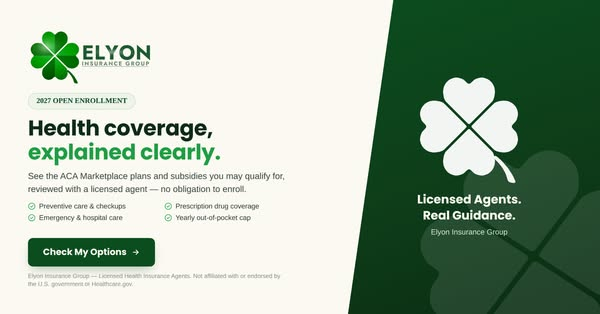
Health coverage shouldn't feel confusing. Answer a few short questions and a licensed agent will walk you through the ACA Marketplace plans you may qualify for no obligation to enroll. Health Coverage, Explained Simply Licensed agents. Clear answers. No pressure. See Details
Renew Dental Implants · 2 ads · longest 21 days · no destination link captured
{kind=link}
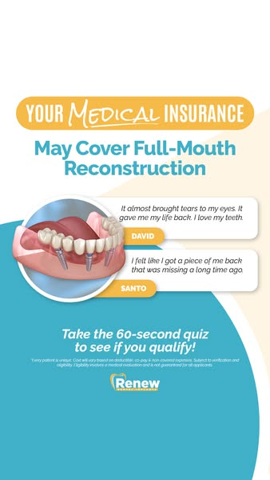
Did you know your health insurance may help cover the cost of full mouth reconstruction? If you’ve been putting off full mouth reconstruction because of cost, we have great news: Your health insurance may help pay for them! Renew Dental Implants now accepts health insurance plans to help cover the cost of full mouth reconstruction. Take the first step toward a confident, lasting smile by answering a few quick questions. Our world class staff will walk you through the process with zero obligation to you. Click learn more to check your eligibility today! Affordable Full Mouth Reconstruction Take our quick 60-second survey to see if you qualify. A new, confident smile could be closer than you t

Did you know your health insurance may help cover the cost of full mouth reconstruction? If you’ve been putting off full mouth reconstruction because of cost, we have great news: Your health insurance may help pay for them! Renew Dental Implants now accepts health insurance plans to help cover the cost of full mouth reconstruction. Take the first step toward a confident, lasting smile by answering a few quick questions. Our world class staff will walk you through the process with zero obligation to you. Click learn more to check your eligibility today! 0:00 / 0:48 Affordable Full Mouth Reconstruction Take our quick 60-second survey to see if you qualify. A new, confident smile could be close
Get My ACA · 1 ads · longest 17 days · no destination link captured
{kind=link}
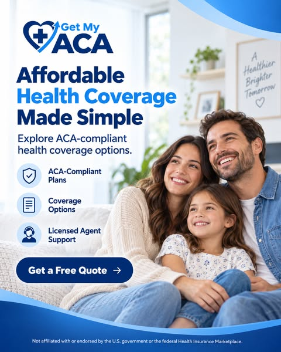
Explore ACA-compliant health coverage options and learn more about plans that may be available in your area. Get a free quote and speak with a licensed insurance agent. Affordable Health Coverage Made Simple Explore ACA-compliant coverage options. Get Quote
Invest in Education · 1 ads · longest 16 days · scholarshiptaxcredit.org
{kind=link}
• Paid for by Invest in Education Foundation When it comes to our kids, New York shouldn’t settle for less. The Federal Scholarship Tax Credit can help millions of eligible students access opportunities and unlock the support they need to succeed. Learn more today! SCHOLARSHIPTAXCREDIT.ORG Don't Miss This Explore the opportunity Learn more
Onin Staffing - Cullman · 1 ads · longest 7 days · no destination link captured
🏗️ OVERHEAD CRANE / PRODUCTION – $18/HR Experienced Crane Operators — We Want to Talk to You! No crane experience? We’re also looking for mechanically inclined, safety-minded candidates who are interested in learning Overhead Crane operation. • $18/hour • Crane operating experience is a PLUS • Opportunity to learn Overhead Crane operation • 12-hour shifts • Day & Night shifts available • Weekday & weekend schedules • Previous forklift experience is a plus • Affordable health insurance after 30 days — including $5 copays, $5 prescriptions & FREE Telehealth Mechanically Inclined? We Want You! Call now
Health Insurance Compass · 1 ads · longest 5 days · no destination link captured
{kind=link}
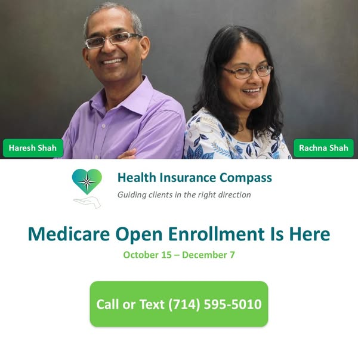
Medicare Open enrollment is here. Let us help you find the right health plan. 🧭 ✓ Personalized, no-cost guidance from a husband-and-wife team who take the time to understand your needs. ✓ We work with 25+ Medicare plans and speak English, Gujarati & Hindi. This open enrollment season, let an expert do the work for you. 📞 Call today: (714) 595-5010 Website: healthinsurancecompass.com License #: Haresh Shah [0H40917], Rachna Shah [0K36850] TPMO Disclaimer: We do not offer every plan available in your area. Any information we provide is limited to those plans we do offer in your area. Please contact Medicare.gov or 1-800-633-4227 to get information on all your options.
PPO Health Coverage · 1 ads · longest 4 days · ppo-plans.com
{kind=link}
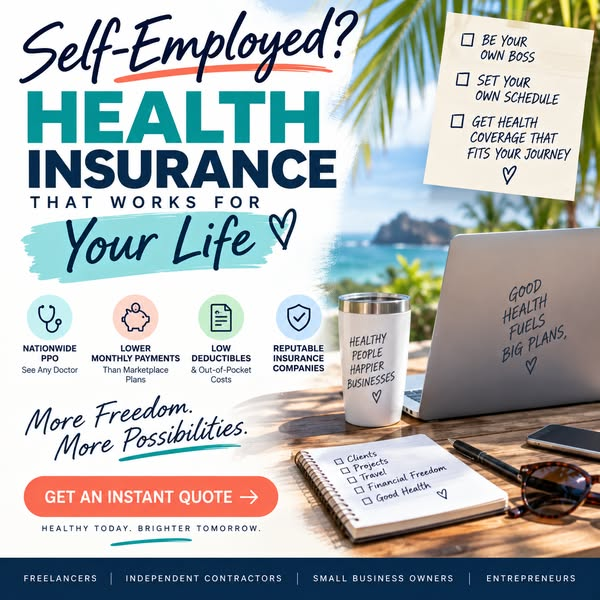
Self-employed? Overpaying for health insurance? Healthy? Make over $50K? You may qualify to cut your rates in HALF and get better coverage. 👇 Click below, answer 4 quick questions, get an instant quote, and get matched with an advisor. PPO-PLANS.COM Self-Employed? Save Up to 50% on Health Insurance! Answer 4 Quick Questions • See Your Pricing See details
Trezza Insurance · 1 ads · longest 1 days · no destination link captured
{kind=link}
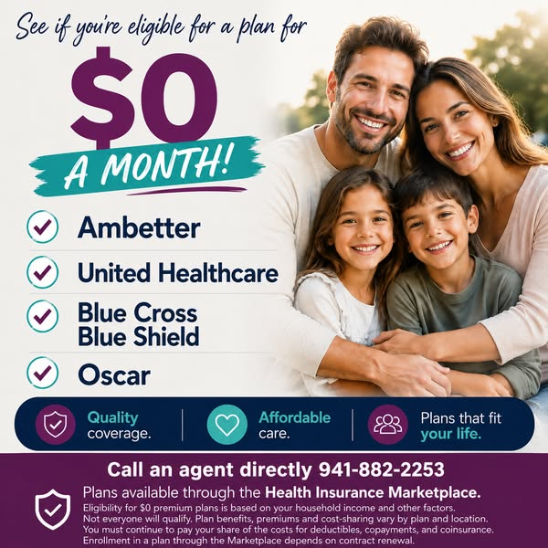
Why pay more for health insurance than you have to? We'll help you compare ACA Marketplace plans from trusted carriers like Ambetter, UnitedHealthcare, Blue Cross Blue Shield, and Oscar to see what savings you may qualify for—including plans with premiums as low as $0/month for eligible individuals. Book your free consultation today! See If You Qualify for $0/Month Health Insurance Free plan comparison. No obligation. Get Quote
Aligned Coverage · 1 ads · longest 0 days · no destination link captured
{kind=link}
Looking for health coverage that fits your needs and budget? Compare available health insurance options and speak with a licensed agent today. Compare Health Insurance Options Speak with a licensed health insurance agent to compare available plans and pricing. Call Now
The carriers' own ads · 5 ads · 4 advertisers
BCBS Global Solutions · 1 ads · longest 95 days · bcbsglobalsolutions.com
{kind=link}
Blue Cross and Blue Shield of Minnesota · 2 ads · longest 39 days · bluecrossmn.com

Get one card and one plan for a $0 premium when you choose a Blue Cross health plan that combines your Medical Assistance (Medicaid) and Medicare benefits. BLUECROSSMN.COM/CHOOSEPLAN One card, one plan, $0 premium Maximize your benefits See Details Maximize your benefits BLUECROSSMN.COM/CHOOSEPLAN $0 premium health plan for 65+ Maximize your benefits See Details Maximize your benefits BLUECROSSMN.COM/CHOOSEPLAN Discover why Blue Cross Maximize your benefits See Details Maximize your benefits
{kind=link}
Celebrate turning 65 with a $0 premium Medical Assistance (Medicaid) and Medicare combined plan with added benefits. BLUECROSSMN.COM/CHOOSEPLAN Something to celebrate $0 health plan for 65+ See Details $0 health plan for 65+ BLUECROSSMN.COM/CHOOSEPLAN One card, one plan, $0 premium $0 premium health plan for 65+ See Details $0 premium health plan for 65+ BLUECROSSMN.COM/CHOOSEPLAN Discover why Blue Cross $0 premium health plan for 65+ See Details $0 premium health plan for 65+
Blue Cross and Blue Shield of Kansas City · 1 ads · longest 24 days · bluekc.com
{kind=link}
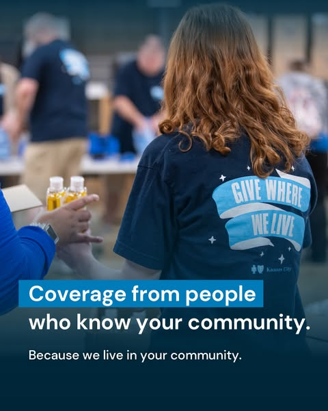
Blue Cross and Blue Shield of Kansas City gives where we live, supporting the health of the communities we call home. BLUEKC.COM From here. For wherever you are. With health insurance plans for groups, employers, individuals and their families - you can live healthy and fearless with coverage from Blue KC. Learn more
UnitedHealthcare · 1 ads · longest 10 days · no destination link captured
{kind=link}
Choosing your health plan? Learn how a deductible works so you can compare health plan options with confidence. 0:00 / 0:30 What's a deductible, really? Learn the differences between high deductible and low deductible health insurance plans and what the benefits are so you can make a more informed decision. Learn More
Named local agencies and brokers · 113 ads · 49 advertisers
Sackett & Associates Insurance Services · 1 ads · longest 1913 days · no destination link captured
{kind=link}
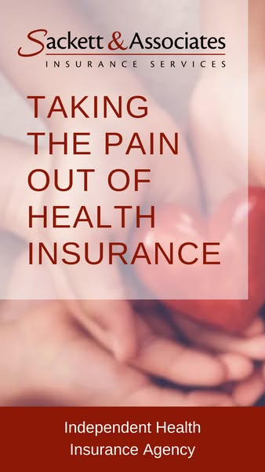
Independent Health Insurance Agency Dedicated to Meeting Your Needs! We're Your Advocate Find a Plan That's Right For You Get Quote
David Cravens Insurance Services · 1 ads · longest 1837 days · no destination link captured
{kind=link}
Hello! My name is David Cravens, your trusted insurance professional in San Diego, CA. I have been working with small businesses for 23 years, using my knowledge and expertise to choose insurance plans that meets clients health care needs and budget. Visit my website to learn more about the services I offer or contact me today! DAVIDCRAVENS.MYHOMEHQ.BIZ Insurance Agent | San Diego, California Your trusted insurance professional with La Jolla Health Insurance Plans Learn more
AVZ Benefit Solutions · 1 ads · longest 1447 days · https://crm.avzbenefits.com/healthcare
Landing page: Free Quote Done Right For You
{kind=link}
{kind=link}
Need Affordable Health Insurance? Our insurance brokers access all major carriers to find you the right coverages that best fit your needs and budget. FL founded insurance agency currently serving over 10 states and hundreds of satisfied clients with insurances in Health, Dental, Vision, Medicare, Life, etc. CALL TODAY! CRM.AVZBENEFITS.COM HEALTH INSURANCE Get a free quote on affordable health insurance wherever you are located. Based on your needs, budget, and eligibility. We do the work for you. Shop now
Tristate Insurance Store · 1 ads · longest 1010 days · api.whatsapp.com
{kind=link}
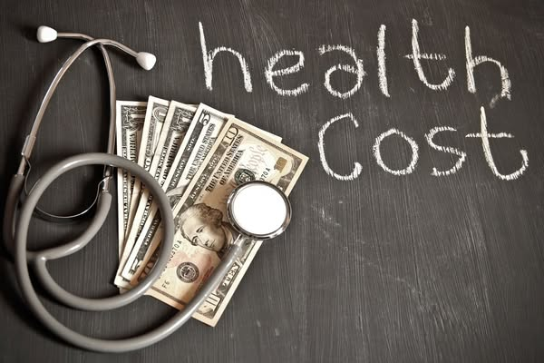
Independent Insurance Broker, Health, Life, Auto and Home. Obamacare & Medicare API.WHATSAPP.COM Tristate Insurance Store Send WhatsApp message
The "REAL" Insurance Lady · 2 ads · longest 854 days · instagram.com
{kind=link}
The “REAL” Insurance Lady is excited to extend an exclusive partnership opportunity to you! By joining forces, we aim to provide unparalleled value to your employees and customers through complimentary consultations and access to budget-friendly health insurance plans. Together, we can ensure peace of mind and financial security for all. Reach out to us at marketing@therealinsurancelady.com to arrange a discussion and embark on this mutually beneficial journey! #insurance #personalfinance #TRIL #therealinsurancelady #collaboration #partnership #workwithus #healthinsurance INSTAGRAM.COM The "REAL" Insurance Lady Visit Instagram profile
{kind=link}
Who is The “REAL” Insurance Lady? 🌸✨🤔 We are nation’s #1 producing Obamacare agency! 👏🏾🤩 What do we offer?🤔 💲Free or Affordable Health Insurance🏥 How to apply? 👀CALL ☎️ (713)367-1161 or visit our website at therealinsurancelady.com😃 #GotInsurance #TheREALInsuranceLady #AffordableHealthcare #AffordableHealthcare #affordablehealthinsurance #TRIL 0:00 / 0:26 INSTAGRAM.COM The "REAL" Insurance Lady Visit Instagram profile
Plan Advisor · 8 ads · longest 549 days · no destination link captured
{kind=link}
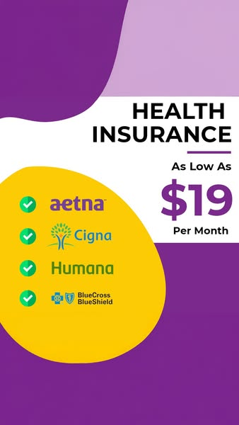
Are you 𝙨𝙚𝙡𝙛 𝙚𝙢𝙥𝙡𝙤𝙮𝙚𝙙, 1099 𝙘𝙤𝙣𝙩𝙧𝙖𝙘𝙩𝙤𝙧, 𝙩𝙧𝙪𝙘𝙠 𝙙𝙧𝙞𝙫𝙚𝙧, 𝙨𝙢𝙖𝙡𝙡 𝙗𝙪𝙨𝙞𝙣𝙚𝙨𝙨 𝙤𝙬𝙣𝙚𝙧 or on an expensive 𝙘𝙤𝙗𝙧𝙖 plan? If so, then we need to talk! Get health insurance for as little as $19/month! Find your BEST rate in less than 60 seconds. 🕒 🤏 Smaller Premiums ⏬ Lower Deductibles ⏫ Better Coverage 🛠️ Customized Find your best rate in under 60 seconds → Talk to a licensed insurance agent & get covered today. Get Quote
{kind=link}
Are you 𝙨𝙚𝙡𝙛 𝙚𝙢𝙥𝙡𝙤𝙮𝙚𝙙, 1099 𝙘𝙤𝙣𝙩𝙧𝙖𝙘𝙩𝙤𝙧, 𝙩𝙧𝙪𝙘𝙠 𝙙𝙧𝙞𝙫𝙚𝙧, 𝙨𝙢𝙖𝙡𝙡 𝙗𝙪𝙨𝙞𝙣𝙚𝙨𝙨 𝙤𝙬𝙣𝙚𝙧 or on an expensive 𝙘𝙤𝙗𝙧𝙖 plan? If so, then we need to talk! Get health insurance for as little as $19/month! Find your BEST rate in less than 60 seconds. 🕒 🤏 Smaller Premiums ⏬ Lower Deductibles ⏫ Better Coverage 🛠️ Customized

Are you 𝙨𝙚𝙡𝙛 𝙚𝙢𝙥𝙡𝙤𝙮𝙚𝙙, 1099 𝙘𝙤𝙣𝙩𝙧𝙖𝙘𝙩𝙤𝙧, 𝙩𝙧𝙪𝙘𝙠 𝙙𝙧𝙞𝙫𝙚𝙧, 𝙨𝙢𝙖𝙡𝙡 𝙗𝙪𝙨𝙞𝙣𝙚𝙨𝙨 𝙤𝙬𝙣𝙚𝙧 or on an expensive 𝙘𝙤𝙗𝙧𝙖 plan? If so, then we need to talk! Get health insurance for as little as $19/month! Find your BEST rate in less than 60 seconds. 🕒 🤏 Smaller Premiums ⏬ Lower Deductibles ⏫ Better Coverage 🛠️ Customized Find your best rate in under 60 seconds → Talk to a licensed insurance agent & get covered today. Get Quote
{kind=link}
Are you 𝙨𝙚𝙡𝙛 𝙚𝙢𝙥𝙡𝙤𝙮𝙚𝙙, 1099 𝙘𝙤𝙣𝙩𝙧𝙖𝙘𝙩𝙤𝙧, 𝙩𝙧𝙪𝙘𝙠 𝙙𝙧𝙞𝙫𝙚𝙧, 𝙨𝙢𝙖𝙡𝙡 𝙗𝙪𝙨𝙞𝙣𝙚𝙨𝙨 𝙤𝙬𝙣𝙚𝙧 or on an expensive 𝙘𝙤𝙗𝙧𝙖 plan? If so, then we need to talk! Get health insurance for as little as $19/month! Find your BEST rate in less than 60 seconds. 🕒 🤏 Smaller Premiums ⏬ Lower Deductibles ⏫ Better Coverage 🛠️ Customized Find your best rate in under 60 seconds → Talk to a licensed insurance agent & get covered today. Get Quote
{kind=link}
Are you 𝙨𝙚𝙡𝙛 𝙚𝙢𝙥𝙡𝙤𝙮𝙚𝙙, 1099 𝙘𝙤𝙣𝙩𝙧𝙖𝙘𝙩𝙤𝙧, 𝙩𝙧𝙪𝙘𝙠 𝙙𝙧𝙞𝙫𝙚𝙧, 𝙨𝙢𝙖𝙡𝙡 𝙗𝙪𝙨𝙞𝙣𝙚𝙨𝙨 𝙤𝙬𝙣𝙚𝙧 or on an expensive 𝙘𝙤𝙗𝙧𝙖 plan? If so, then we need to talk! Get health insurance for as little as $19/month! Find your BEST rate in less than 60 seconds. 🕒 🤏 Smaller Premiums ⏬ Lower Deductibles ⏫ Better Coverage 🛠️ Customized Find your best rate in under 60 seconds → Talk to a licensed insurance agent & get covered today. Get Quote
{kind=link}
Finding the right health insurance just got easier! 🛡️✨ 💡 Compare plans side-by-side to find the best fit for your budget and needs. 📉 Options with lower deductibles mean more savings for you. ✅ Get better coverage for your peace of mind and health. ⏱️ Find your personalized rate in under 60 seconds! 🖱️ Easy-to-use tools to help you make the smartest choice. Say goodbye to the hassle and hello to confidence in your health coverage. 🚀 Click now to get started and secure the perfect plan today! 0:00 / 0:44 Limited Time Offer: Get Health Insurance for $19/mo Best Health Insurance for You Get Quote

Are you 𝙨𝙚𝙡𝙛 𝙚𝙢𝙥𝙡𝙤𝙮𝙚𝙙, 1099 𝙘𝙤𝙣𝙩𝙧𝙖𝙘𝙩𝙤𝙧, 𝙩𝙧𝙪𝙘𝙠 𝙙𝙧𝙞𝙫𝙚𝙧, 𝙨𝙢𝙖𝙡𝙡 𝙗𝙪𝙨𝙞𝙣𝙚𝙨𝙨 𝙤𝙬𝙣𝙚𝙧 or on an expensive 𝙘𝙤𝙗𝙧𝙖 plan? If so, then we need to talk! Get health insurance for as little as $19/month! Find your BEST rate in less than 60 seconds. 🕒 🤏 Smaller Premiums ⏬ Lower Deductibles ⏫ Better Coverage 🛠️ Customized
{kind=link}
Finding the right health insurance just got easier! 🛡️✨ 💡 Compare plans side-by-side to find the best fit for your budget and needs. 📉 Options with lower deductibles mean more savings for you. ✅ Get better coverage for your peace of mind and health. ⏱️ Find your personalized rate in under 60 seconds! 🖱️ Easy-to-use tools to help you make the smartest choice. Say goodbye to the hassle and hello to confidence in your health coverage. 🚀 Click now to get started and secure the perfect plan today! 0:00 / 0:41
GRAN Insurance · 2 ads · longest 473 days · graninsurance.com
{kind=link}
¿Sabías que hay planes médicos diseñados para ti y tu familia? Mucha gente ya está aprovechando esta oportunidad para cuidar su salud sin complicaciones. 🔹 Atención médica accesible 🔹 Servicios como especialistas, emergencias y más 🔹 Medicinas y laboratorios incluidos 🔹 Planes simples, rápidos de activar y sin letra pequeña 📲 Escríbenos y descubre hoy mismo qué opciones se ajustan mejor a ti. 0:00 / 0:31 HTTPS://GRANINSURANCE.COM/OBAMACARE/ ¡Inscríbete YA! 👉 🔵Plan bajo Costo. Sign up
{kind=link}
¿Sabías que existen opciones de salud pensadas para ti y tu familia? 💙 Muchas personas ya están aprovechando esta oportunidad para cuidarse sin complicaciones: 🔹 Consultas accesibles 🔹 Servicios como especialistas, emergencias y más 🔹 Apoyo en exámenes y recetas médicas 🔹 Planes fáciles de activar y entender 📲 Escríbenos y conoce hoy mismo qué opción puede funcionar mejor para ti. 0:00 / 0:28 HTTPS://GRANINSURANCE.COM/OBAMACARE/ ¡Regístrate YA! 👉 ✅ Plan accesible Sign up
The Pierce Insurance Group · 1 ads · longest 340 days · no destination link captured
{kind=link}
Just released — new PPO plans with real coverage and zero nonsense. These aren't your typical health insurance plans. ✅ Low deductibles ✅ $0 prescriptions, checkups, & 24/7 teledoc ✅ Massive nationwide networks ✅ Pregnancy & catastrophic care included ✅ No business or 1099 required to qualify Whether you're covering just yourself or your whole family, these plans are built to actually protect you — without the usual headaches. Quick approval. Easy application. No surprises. 👇 Tap below to check availability in your area 👇 0:00 / 0:24 These New Health Plans Just Dropped — Most People Have No Idea They Exist New PPO plans. Massive benefits. Check if you qualify fast. Get quote
Sonny Salas Agency, Inc. · 1 ads · longest 314 days · http://www.sonnysalasagency.com/
Landing page: Sonny Salas & Angela Salas
{kind=link}
{kind=link}
ACA Open Enrollment is in full swing — and we’re here to help! With the government now open, our team of licensed insurance agents are ready to assist you in finding the right health plan for you and your family. Whether you need lower premiums, better coverage, or help understanding your options, we’ll walk you through every step of the process. Open Enrollment is a limited time — don’t wait! 📅 Now’s the time to review, compare, and enroll. 📞 Reach out today to Angela Salas our ACA EXPERT at 979-476-5454 and let us help you get covered with confidence. SONNYSALASAGENCY.COM Sonny Salas & Angela Salas Our mission is to help families become debt free and financially independent. We offer solut
April Griffey- licensed health insurance agent · 1 ads · longest 237 days · no destination link captured
{kind=link}
Looking for affordable health insurance WITHOUT all the phone calls? I specialize with small businesses, individuals, and families and can help shop all options available in your state to find the right plan that fit your needs and budget. Licensed in over 30 states: FL, GA, AL, TN, KY, OH, IL, TX, UT, WY, MS, MI, SC, NC, VA, WV, PA, IN, IA, WI, MO, KS, OK, SD, MT, NV, AZ, LA, AR, NE, CO April Griffey- licensed health insurance agent Insurance company Send message
Matthews Insurance Advisors · 1 ads · longest 219 days · gmatthewsinsurance.com
{kind=link}
🌟 Upgrade Your Health, Save Money! - Claim Your Free Quote NOW! 🌟 Do you crave quality health coverage without breaking the bank? Our exclusive PPO Health Insurance Plans with ZERO deductibles or copays have got you covered! Say goodbye to compromise and hello to a healthier, happier you. 💪 Don't miss this limited-time offer - take action today and secure your spot for a brighter future. It's time to prioritize your well-being and financial stability - let us show you how! Click the link to get started now. 🚀 🔹 Not for those on Medicaid 🔹 Comprehensive PPO health insurance with no deductibles or copays 🔹 Save more than traditional ACA plans - especially if you're a high income earner 🔹 Exper
Royal Insurance USA LLC · 3 ads · longest 212 days · no destination link captured
{kind=link}
¿Sin seguro médico en California? 🌴 No todo está perdido. Sabemos que el periodo de inscripción general ya pasó, pero muchos no saben que aún pueden calificar para una Inscripción Especial por cambios en su vida. Comunícate con nosotros para mas información 📲 . #latinos #obamacare 0:00 / 0:28 FB.ME Royal Insurance USA LLC Subscribe
{kind=link}
¿Te da miedo enfermarte en EE.UU. por el costo de los hospitales y las medicinas? No arriesgues la tranquilidad ni el bolsillo de tu familia. Con Obamacare puedes tener una cobertura médica completa pagando mucho menos de lo que imaginas. 0:00 / 0:21 FB.ME ¡Asegura la salud de tu familia a un precio que sí puedes pagar! Verifica si calificas para Obamacare en pocos minutos. Subscribe
{kind=link}
Vivir en Estados Unidos y no contar con un seguro médico puede convertirse en tu peor pesadilla. Una sola visita a emergencias o una consulta de rutina puede costar miles de dólares y poner en riesgo el patrimonio que tanto te ha costado construir. 0:00 / 0:26 FB.ME ¿Miedo a una emergencia médica en EE. UU.? Protege a tu familia sin arruinar tu bolsillo 🩺✨ Obtén tu seguro médico a bajo costo con Obamacare. ¡Consulta gratis si calificas hoy mismo! 📲 Subscribe
Theriot Family Agency, Inc. · 1 ads · longest 207 days · theriotinsuranceagency.com
{kind=link}
Protect what matters most with trusted local insurance! From auto and home to business and life — our independent agents compare top carriers to find the right coverage for you. Serving Louisiana since 1985 with personalized service you can count on. 💼🏠🚗 THERIOTINSURANCEAGENCY.COM Local Insurance Experts Get A Quote Today Get quote
Right Way Insurance Solution · 3 ads · longest 197 days · no destination link captured

Si eres inmigrante, ¡TU SALUD ES UN DERECHO! Conoce cómo Obamacare puede ayudarte a obtener seguro médico accesible y confiable, sin que tu estatus migratorio sea un impedimento. 🌟 En Right Way Insurance, te guiamos en tu idioma y sin compromiso. ¡Agenda tu cita hoy mismo y descubre si calificas! 🗓️ 0:00 / 0:31
{kind=link}
🌟 ¿Seguro médico desde 0 dólares al mes? ¡Sí, es posible! Con Obamacare, puedes acceder a consultas, emergencias y medicamentos sin gastar una fortuna. 🏥 Millones ya disfrutan de coberturas de bajo costo e incluso GRATUITAS. Todo depende de tus ingresos y tu familia. ¡Rápido, fácil y 100% confidencial! 🌟 Llámanos o haz clic aquí para obtener tu cobertura hoy. 0:00 / 0:28 ¡Seguro médico desde 0 dólares al mes! Descubre si calificas hoy. Accede a consultas, emergencias y medicamentos a un costo increíblemente bajo o incluso GRATIS. ¡No dejes pasar esta oportunidad para proteger tu salud y la de tu familia! Llama ahora o haz clic aquí para saber más. Apply now
{kind=link}
Si eres inmigrante, ¡TU SALUD ES UN DERECHO! Conoce cómo Obamacare puede ayudarte a obtener seguro médico accesible y confiable, sin que tu estatus migratorio sea un impedimento. 🌟 En Right Way Insurance, te guiamos en tu idioma y sin compromiso. ¡Agenda tu cita hoy mismo y descubre si calificas! 🗓️ 0:00 / 0:31
Business Health Advisors · 4 ads · longest 188 days · no destination link captured
{kind=link}
🇺🇸 AMERICAN TRUCKERS KEEP TRUCKIN! 🇺🇸 🛑UNDER 65 TRUCKERS - STOP AND READ THIS 🛑 Stay protected on and off the road with an affordable Health Insurance plan Our BRAND NEW coverage options for Truckers comes with: 💸Lower Monthly Cost ⬆️Better Coverage 🇺🇸 Coverage that Crosses State Lines 🛠 And More WE HELP TRUCKERS GET QUALITY COVERAGE AT AFFORDABLE RATES! Start with a complimentary quote today by clicking the "Get Quote" button below! FB.ME 🛑 COVERAGE THAT CROSSES STATE LINES Get quote
{kind=link}
🇺🇸 AMERICAN TRUCKERS KEEP TRUCKIN! 🇺🇸 🛑UNDER 65 TRUCKERS - STOP AND READ THIS 🛑 Stay protected on and off the road with an affordable Health Insurance plan Our BRAND NEW coverage options for Truckers comes with: 💸Lower Monthly Cost ⬆️Better Coverage 🇺🇸 Coverage that Crosses State Lines 🛠 And More WE HELP TRUCKERS GET QUALITY COVERAGE AT AFFORDABLE RATES! Start with a complimentary quote today by clicking the "Get Quote" button below! 0:00 / 1:07

🇺🇸 AMERICAN TRUCKERS KEEP TRUCKIN! 🇺🇸 🛑UNDER 65 TRUCKERS - STOP AND READ THIS 🛑 Stay protected on and off the road with an affordable Health Insurance plan Our BRAND NEW coverage options for Truckers comes with: 💸Lower Monthly Cost ⬆️Better Coverage 🇺🇸 Coverage that Crosses State Lines 🛠 And More WE HELP TRUCKERS GET QUALITY COVERAGE AT AFFORDABLE RATES! Start with a complimentary quote today by clicking the "Get Quote" button below! 0:00 / 1:07

🇺🇸 AMERICAN TRUCKERS KEEP TRUCKIN! 🇺🇸 🛑UNDER 65 TRUCKERS - STOP AND READ THIS 🛑 Stay protected on and off the road with an affordable Health Insurance plan Our BRAND NEW coverage options for Truckers comes with: 💸Lower Monthly Cost ⬆️Better Coverage 🇺🇸 Coverage that Crosses State Lines 🛠 And More WE HELP TRUCKERS GET QUALITY COVERAGE AT AFFORDABLE RATES! Start with a complimentary quote today by clicking the "Get Quote" button below! 0:00 / 1:07
Daniel Smith Health Insurance · 1 ads · longest 183 days · no destination link captured
{kind=link}
DO NOT do this when looking for Health Insurance! 0:00 / 0:55 Get a Quote Send Message
Self Employed Health Insurance · 15 ads · longest 176 days · no destination link captured

𝐉𝐔𝐒𝐓 𝐏𝐀𝐒𝐒𝐄𝐃 2025!!! Health Insurance designed with business owners and self-employed in mind! ✅Lower premiums and better coverage than ACA plans ✅No Out-of-Network ✅You can keep your doctor ✅No Copays and No Deductibles! Why are business owners paying DOUBLE for private health insurance with high deductibles... Click BELOW to see your rate👇 For Self Employed, Business Owners, Contractors, etc. ⭐⭐⭐⭐⭐ (8,567) Reviews Learn More
{kind=link}
𝐉𝐔𝐒𝐓 𝐏𝐀𝐒𝐒𝐄𝐃 2025!!! Health Insurance designed with business owners and self-employed in mind! ✅Lower premiums and better coverage than ACA plans ✅No Out-of-Network ✅You can keep your doctor ✅No Copays and No Deductibles! Why are business owners paying DOUBLE for private health insurance with high deductibles... Click BELOW to see your rate👇 For Self Employed, Business Owners, Contractors, etc. ⭐⭐⭐⭐⭐ (8,567) Reviews Learn More

𝐉𝐔𝐒𝐓 𝐏𝐀𝐒𝐒𝐄𝐃 2025!!! Health Insurance designed with business owners and self-employed in mind! ✅Lower premiums and better coverage than ACA plans ✅No Out-of-Network ✅You can keep your doctor ✅No Copays and No Deductibles! Why are business owners paying DOUBLE for private health insurance with high deductibles... Click BELOW to see your rate👇 For Self Employed, Business Owners, Contractors, etc. ⭐⭐⭐⭐⭐ (8,567) Reviews Learn More

Attention Small Business Owners & Independent Contractors! Tired of overpaying for health insurance that doesn’t meet your needs? Discover the new 2026 health plans designed specifically for self-employed professionals like you. ✅ Lower monthly premiums ✅ Nationwide PPO networks – see any doctor ✅ Tailored coverage with no unnecessary extras ✅ Fast, hassle-free enrollment ✅ Keep more of your hard-earned money while staying protected ❌ These plans are NOT for those looking for Medicare, Medicaid, ACA, or Medicare Supplement plans. Take control of your health coverage today. Get a personalized quote now! For Self Employed, Business Owners, Contractors, etc. ⭐⭐⭐⭐⭐ (8,567) Reviews Get Quote
{kind=link}
Attention Small Business Owners & Independent Contractors! Tired of overpaying for health insurance that doesn’t meet your needs? Discover the new 2026 health plans designed specifically for self-employed professionals like you. ✅ Lower monthly premiums ✅ Nationwide PPO networks – see any doctor ✅ Tailored coverage with no unnecessary extras ✅ Fast, hassle-free enrollment ✅ Keep more of your hard-earned money while staying protected ❌ These plans are NOT for those looking for Medicare, Medicaid, ACA, or Medicare Supplement plans. Take control of your health coverage today. Get a personalized quote now! For Self Employed, Business Owners, Contractors, etc. ⭐⭐⭐⭐⭐ (8,567) Reviews Get Quote
{kind=link}
Attention Small Business Owners & Independent Contractors! Tired of overpaying for health insurance that doesn’t meet your needs? Discover the new 2026 health plans designed specifically for self-employed professionals like you. ✅ Lower monthly premiums ✅ Nationwide PPO networks – see any doctor ✅ Tailored coverage with no unnecessary extras ✅ Fast, hassle-free enrollment ✅ Keep more of your hard-earned money while staying protected ❌ These plans are NOT for those looking for Medicare, Medicaid, ACA, or Medicare Supplement plans. Take control of your health coverage today. Get a personalized quote now! For Self Employed, Business Owners, Contractors, etc. ⭐⭐⭐⭐⭐ (8,567) Reviews Get Quote
{kind=link}
Attention Small Business Owners & Independent Contractors! Tired of overpaying for health insurance that doesn’t meet your needs? Discover the new 2026 health plans designed specifically for self-employed professionals like you. ✅ Lower monthly premiums ✅ Nationwide PPO networks – see any doctor ✅ Tailored coverage with no unnecessary extras ✅ Fast, hassle-free enrollment ✅ Keep more of your hard-earned money while staying protected ❌ These plans are NOT for those looking for Medicare, Medicaid, ACA, or Medicare Supplement plans. Take control of your health coverage today. Get a personalized quote now! For Self Employed, Business Owners, Contractors, etc. ⭐⭐⭐⭐⭐ (8,567) Reviews Get Quote
{kind=link}
Attention Small Business Owners & Independent Contractors! Tired of overpaying for health insurance that doesn’t meet your needs? Discover the new 2026 health plans designed specifically for self-employed professionals like you. ✅ Lower monthly premiums ✅ Nationwide PPO networks – see any doctor ✅ Tailored coverage with no unnecessary extras ✅ Fast, hassle-free enrollment ✅ Keep more of your hard-earned money while staying protected ❌ These plans are NOT for those looking for Medicare, Medicaid, ACA, or Medicare Supplement plans. Take control of your health coverage today. Get a personalized quote now! For Self Employed, Business Owners, Contractors, etc. ⭐⭐⭐⭐⭐ (8,567) Reviews Get Quote
O'Myer Insurance Group · 2 ads · longest 165 days · no destination link captured
{kind=link}
Affordable Health Insurance for Self-Employed, Small Businesses, 10-99, Independent Contractors, Farmers, Ranchers, Individuals, and Families. FB.ME Affordable Health Insurance Affordable Health Insurance for Self-Employed, Small Businesses, 10-99, Independent Contractors, Farmers, Ranchers, Individuals, and Families. Get quote
{kind=link}
Self-employed doesn't mean that you're on your own. Health insurance is one of the biggest stressors for entrepreneurs, and most people are either overpaying or not fully protected. I am your local agent located in Montana. I specialize in helping business owners secure the right coverage, and I stay your advisor for the lifetime of your policy. When something happens, you call me not a customer service line. FB.ME Affordable Health Insurance Call Now (406)670-3810 Get quote
Davidson Insurance Advisors · 1 ads · longest 156 days · no destination link captured
{kind=link}
Spending a lot on health insurance every month? If you're under $300/month, this probably isn’t for you. This also works best for people in good health. 👇 Good fit: ✅ Paying $800–$1,200+ ✅ No major ongoing health issues ✅ Low usage (not in and out of doctors) ✅ No doctor network restrictions 👉 Click below and check if you qualify 0:00 / 0:16 Health Insurance Over $900/Month? See why many leave $900+ plans Get Quote
Landfair Financial Group · 1 ads · longest 149 days · no destination link captured
{kind=link}
Paying $1,000+ a month for health insurance? This is who this is built for. If you have major health issues or need a lot of care, this usually isn’t the best fit. 👇 Best fit: ✅ Paying $800+ monthly ✅ Generally healthy ✅ Don’t need frequent doctor visits or meds ✅ No doctor network restrictions 👉 Tap below to see if this fits your situation Spending $1K/Month on Insurance? See why many leave $900+ plans Get Quote
Affordable Health Insurance · 15 ads · longest 143 days · affordable-health-insurance.org
{kind=link}
Looking for affordable health insurance? Get Blue Cross coverage as low as $79/month! Fast, free quotes are just a click away. Secure your health today! AFFORDABLE-HEALTH-INSURANCE.ORG Affordable Health Insurance Starts at $79/Month! This website is owned and operated by SmartFinancial.com Insurance LLC, a licensed insurance agency NPN #16007713, and is not a government website or affiliated with any federal or state health insurance marketplace. Invitations to apply for insurance through this website are offered only where Smar... Learn more
{kind=link}
Most people don’t realize this… There are health plans with $0 deductibles and flexible coverage options and they can cost a lot less than what you’re currently paying. If you’ve looked at COBRA or expensive employer plans, this might be worth checking. Takes less than a minute to see what you qualify for.
{kind=link}
Looking for affordable health insurance? Get Blue Cross coverage as low as $79/month! Fast, free quotes are just a click away. Secure your health today! AFFORDABLE-HEALTH-INSURANCE.ORG Affordable Health Insurance Starts at $79/Month! This website is owned and operated by SmartFinancial.com Insurance LLC, a licensed insurance agency NPN #16007713, and is not a government website or affiliated with any federal or state health insurance marketplace. Invitations to apply for insurance through this website are offered only where Smar... Get quote

Most people don’t realize this… There are health plans with $0 deductibles and flexible coverage options and they can cost a lot less than what you’re currently paying. If you’ve looked at COBRA or expensive employer plans, this might be worth checking. Takes less than a minute to see what you qualify for.
{kind=link}
Most people don’t realize this… There are health plans with $0 deductibles and flexible coverage options and they can cost a lot less than what you’re currently paying. If you’ve looked at COBRA or expensive employer plans, this might be worth checking. Takes less than a minute to see what you qualify for.
{kind=link}
Most people don’t realize this… There are health plans with $0 deductibles and flexible coverage options and they can cost a lot less than what you’re currently paying. If you’ve looked at COBRA or expensive employer plans, this might be worth checking. Takes less than a minute to see what you qualify for.
{kind=link}
Looking for affordable health insurance? Get Blue Cross coverage as low as $79/month! Fast, free quotes are just a click away. Secure your health today! AFFORDABLE-HEALTH-INSURANCE.ORG Affordable Health Insurance Starts at $79/Month! This website is owned and operated by SmartFinancial.com Insurance LLC, a licensed insurance agency NPN #16007713, and is not a government website or affiliated with any federal or state health insurance marketplace. Invitations to apply for insurance through this website are offered only where Smar... See details
{kind=link}
Looking for affordable health insurance? Get Blue Cross coverage as low as $79/month! Fast, free quotes are just a click away. Secure your health today! Blue Cross Health Insurance for Just $79/Month! Get Quote
MD Health Insurance · 2 ads · longest 119 days · no destination link captured

🚨Attention Small Businesses: Private health plans starting at just $160/month! 🚨 Are traditional insurance brokers offering plans that are too expensive or not what you need? With MD Health Insurance, you get: ✅ Enjoy up to 40% OFF premiums and enhanced coverage compared to traditional ACA plans ✅ Say goodbye to out-of-network hassles. ✅ Maintain continuity of care with your trusted physician. ✅ Bid farewell to copays and deductibles, ensuring straightforward access to healthcare services. ✅ Full nationwide coverage ✅ No open enrollment period Ready to stop overpaying for health insurance for yourself and your business? Tap on the [Learn More] to secure affordable health insurance today! 0:0
{kind=link}
🚨Attention Small Businesses: Private health plans starting at just $160/month! 🚨 Are traditional insurance brokers offering plans that are too expensive or not what you need? With MD Health Insurance, you get: ✅ Enjoy up to 40% OFF premiums and enhanced coverage compared to traditional ACA plans ✅ Say goodbye to out-of-network hassles. ✅ Maintain continuity of care with your trusted physician. ✅ Bid farewell to copays and deductibles, ensuring straightforward access to healthcare services. ✅ Full nationwide coverage ✅ No open enrollment period Ready to stop overpaying for health insurance for yourself and your business? Tap on the [Learn More] to secure affordable health insurance today! 0:0
UWorld Insurance Group · 2 ads · longest 115 days · no destination link captured
{kind=link}
• Paid for by UWORLD INSURANCE GROUP ¿Diabetes, presión alta o asma? Por ley federal, ACA NO puede negarle. Y el plan puede costar $0/mes si califica. La semana pasada un vecino recibió una factura de $18,000 por UNA noche en el hospital. Sin seguro. Eso no le puede pasar a usted. La mentira: "con mi condición no califico." La verdad por ley federal desde 2014: ✅ Diabetes — cubierta ✅ Presión alta — cubierta ✅ Asma — cubierta ✅ Depresión y ansiedad — cubiertas ✅ Embarazo — cubierto desde el día 1 El enemigo es la complejidad que nadie le tradujo al español. Un agente latino licenciado le confirma SÍ o NO en 5 minutos por teléfono. Sin entregar Social hasta que decida. Gratis. ¿Seguir aguanta
{kind=link}
• Paid for by UWORLD INSURANCE GROUP Por ley federal, ningún plan de Obamacare puede negarle cobertura por diabetes, presión alta, asma o historial de cáncer. Lo entendemos. Le dijeron que no — quizás hace años, quizás el mes pasado. Pero la ley cambió en el 2014 y nadie se lo explicó en español. La mentira: su condición lo descalifica. La verdad: desde el 2014, ningún plan del Marketplace puede negarle ni cobrarle más. La misma cobertura. Los mismos doctores. Los mismos hospitales. Las mismas medicinas. Soy Ivan, agente latino licenciado en 21 estados. Le confirmo SÍ o NO en 5 minutos. Sin entregar Social hasta que usted decida. Servicio gratis. ¿Diabetes, presión, asma, cáncer? No asuma. P
Tierra - Your Favorite Health Insurance Girl · 2 ads · longest 105 days · no destination link captured
{kind=link}
Self-employed doesn’t mean you’re on your own. Health insurance is one of the biggest stressors for entrepreneurs , and most people are either overpaying or not fully protected. I specialize in helping business owners secure the right coverage and I stay your advisor for the lifetime of your policy. When something happens, you call me not a customer service line. FB.ME Easy Quote, No Spam! Get quote
{kind=link}
Being self employed and running your own show is not easy. It takes bravery, discipline, and whole lot of hard work. I've found from my experience that the most grueling part of going off on your own to be self employed is worry about health insurance. Can I afford it? How am I going to find the right plan with so many options? Do I have too much coverage? Not enough coverage? What if my income goes up? So many questions but not enough time to answer them when you're pursuing your dreams and getting your business off the ground and running… That's where I come in! I am a Licensed Health Insurance Advisor that specializes in helping the self-employed. I am here to take away your stress and do
Wynncrest Insurance Agency · 2 ads · longest 102 days · no destination link captured
{kind=link}
Americans age 25-64 can now qualify for $0 health coverage using subsidies and health credits. FB.ME Find out if you qualify in 60 seconds Qualify for $0 Health Insurance - Low Income and Self Employed Americans Apply now
{kind=link}
Denied Medicaid? You may qualify for $0 health coverage using subsidies and health credits. FB.ME Find out if you qualify in 60 seconds Qualify for $0 Health Insurance - Denied Medicaid Apply now
Alba Insurance USA · 1 ads · longest 94 days · no destination link captured
{kind=link}
¿Podrías calificar para seguro médico a bajo costo en EE.UU.? 🇺🇸 Con Obamacare, muchas personas acceden a cobertura según su situación. ✔️ Planes accesibles ✔️ Opciones según ingresos y elegibilidad ✔️ Diferentes opciones de cobertura Déjanos tus datos y te contactamos. FB.ME Opciones de seguro médico en EE.UU. Cobertura según elegibilidad y ubicación Learn more
Pets Best Pet Health Insurance · 3 ads · longest 92 days · no destination link captured
{kind=link}
With Pets Best, you could get pet insurance for less than $1 a day. Give your pet the care they need, when they need it. Get a free quote today! Get a free quote today! Get Quote
{kind=link}
With Pets Best, you could get pet insurance for less than $1 a day. Give your pet the care they need, when they need it. Get a free quote today! 0:00 / 0:15 Get a free quote today! Get Quote
{kind=link}
With Pets Best, you could get pet insurance for less than $1 a day. Give your pet the care they need, when they need it. Get a free quote today! Get a free quote today! Get Quote
Mariana Espina Insurance · 1 ads · longest 83 days · no destination link captured
{kind=link}
🌟 Protege a tu familia hoy con Obamacare 🌟 ¿Eres latino y tienes estatus migratorio legal? ¡No dejes pasar esta oportunidad! Accede a un seguro de salud económico que incluye: ✅ Consultas médicas ✅ Medicamentos recetados ✅ Emergencias y hospitalización ✅ ¡Y mucho más para tu tranquilidad! 📋 Te guiamos paso a paso en la aplicación 100% GRATIS. 💬 Mándanos un mensaje AHORA y descubre las coberturas disponibles para ti y tu familia. WHATSAPP Mándanos un mensaje Haz clic en la foto para hablar con nosotros. Send WhatsApp message
Insurance Medics Health · 1 ads · longest 77 days · no destination link captured
{kind=link}
¿Sin seguro médico? ¿Perdió la cobertura de su trabajo? ¿Trabaja por cuenta propia? Puede calificar para un plan de salud con primas de $0 al mes a través del Mercado de ACA. Insurance Medics es una agencia local en Florida con agentes bilingües listos para encontrarle el mejor plan — sin costo para usted. Lo manejamos todo el mismo día. ✅ Planes con prima de $0 disponibles ✅ Agentes licenciados en Florida ✅ Atención en español e inglés ✅ Inscripción el mismo día Seguro Médico en Florida — Planes Desde $0/mes Agencia licenciada en Florida. Cotizaciones gratis, sin costo para usted. Get Quote
Goodwin Insurance Advisors · 2 ads · longest 71 days · no destination link captured

Most people are overpaying for health insurance coverage...without even using most of what's in their plan. We help our clients save 20-70% on healthcare costs and improve coverage through a nationwide PPO network. We're a nationwide family-owned insurance agency in Florida. Have a quick chat with us to see if we can help save you money while improving your coverage. 0:00 / 0:38 Health Insurance That Costs Less & Covers More Get Quote
{kind=link}
Most people are overpaying for health insurance coverage...without even using most of what's in their plan. We help our clients save 20-70% on healthcare costs and improve coverage through a nationwide PPO network. We're a nationwide family-owned insurance agency in Florida. Have a quick chat with us to see if we can help save you money while improving your coverage. 0:00 / 0:38 Health Insurance That Costs Less & Covers More Get Quote
ASPCA Pet Health Insurance · 2 ads · longest 66 days · no destination link captured
{kind=link}
Peace of mind starts with reliable and affordable pet insurance. Choose a plan that works for you and your beloved four-legged family member. Pet Insurance for Tail-Wagging Peace of Mind! Coverage for real life See Details
{kind=link}
One accident could easily cost you $5,000 in vet bills in a single day. Pet insurance can help cover it. 0:00 / 0:30 $5,000 now or in 12 Years? For every pet See Details
La Familia Insurance · 2 ads · longest 46 days · no destination link captured

¿Sabías que el seguro de Obamacare pagando $50 o menos al mes te puede cubrir hospitalizaciones, medicamentos y especialistas? 🏥💊 Muchas familias califican para subsidios que reducen el costo de su plan. Escríbenos y te ayudamos a ver si calificas. Asesoría gratis, en español. 👇 0:00 / 0:18
{kind=link}
¿Sabías que el seguro de Obamacare pagando $50 o menos al mes te puede cubrir hospitalizaciones, medicamentos y especialistas? 🏥💊 Muchas familias califican para subsidios que reducen el costo de su plan. Escríbenos y te ayudamos a ver si calificas. Asesoría gratis, en español. 👇 0:00 / 0:00
Lupac Health Group · 1 ads · longest 37 days · no destination link captured
{kind=link}
¡Planes de seguro médico desde $0 al mes para quienes califiquen, gracias a los créditos fiscales de Obamacare! • Atención médica primaria general • Consultas con especialistas, recetas y salud mental • Cobertura dental, visión y emergencias Dependiendo del estado, compañía y plan, los copagos, deducibles y redes cambian. Si recientemente te mudaste, tuviste un bebé, te casaste, perdiste tu cobertura o necesitas realizar algún cambio en tu plan actual, podemos ayudarte a verificar si calificas. Si Obamacare no está disponible para tu situación, también podemos orientarte sobre opciones privadas asequibles. 🎯 ¿Quieres saber si calificas rápidamente? El proceso solo toma unos minutos, es en es
Capital Growth Advisors · 1 ads · longest 30 days · no destination link captured
{kind=link}
The Affordable Care Act allows up to 4 out of 5 Americans to have $0 MONTH HEALTH INSURANCE! See if you qualify today! Have you ever thought, “There’s no way health insurance can actually be free, right?” Thanks to ACA, thousands of people are now getting $0 health plans—with real coverage that protects you when life hits. No pressure. No pushy sales calls. Just honest help from someone who understands how confusing this stuff can be. ✅ Keep your favorite doctors (in many cases) ✅ Covers emergencies, prescriptions & more ✅ No hidden bills later If you’ve ever said, “I just want to know my family’s covered without paying a fortune”… this is for you. Click Learn More
Vemax Insurance Agency · 1 ads · longest 28 days · no destination link captured
{kind=link}
Before choosing an insurance plan, know your options. Vemax works with multiple insurance carriers to help you compare Medicare and ACA health plans based on your needs and budget. Get personalized guidance from a licensed advisor—at no cost to you. 👉 Explore your options today. Better Insurance Starts Here. Learn More
FOX4 News Kansas City with BBS Insurance · 1 ads · longest 24 days · bbs-insurance.com
{kind=link}
Are you overpaying for your health insurance? BBS Insurance helps individuals and small business owners find smarter, more affordable coverage options with real people who are ready to help every step of the way. From managed individual solutions to flexible dependent coverage, they work to find plans that fit your needs and budget. As a full service brokerage, the team at BBS Insurance knows the products inside and out. Buy better and save with BBS Insurance. 0:00 / 3:30 BBS-INSURANCE.COM FOX4 News Kansas City Contact us
My Viva Insurance with Viva Insurance USA · 2 ads · longest 19 days · no destination link captured

Buscas un seguro DENTAL TODO INCLUIDO???✨ Envía “DENTAL” y acaba con ese dolor de cabeza y de muela🔥🤩 de no tener un #segurodental en este país!! 🔥✅ Te ofrecemos!! ✅Limpiezas dentales incluidas, eliminación de sarro y placa dental!!🦷 ✅Visitas al especialista ✅Tratamiento para caries, resinas y selladores dentales🦷 ✅Rayos X odontologicos ✅Descuentos de hasta un 60% en coronas, implantes y más 😁 ✅Cobertura nacional y emergencias Desde $69 mensuales!! dependiendo de tu edad y el estado donde vivas !! ➡️Nuestro seguro dental cubre todas estas consultas y procedimientos.¡No dejes pasar esta oportunidad de mantener tu salud dental al máximo nivel! Come tranquilo con VIVA INSURANCE Y que viva la vi
{kind=link}
Buscas un seguro DENTAL TODO INCLUIDO???✨ Envía “DENTAL” y acaba con ese dolor de cabeza y de muela🔥🤩 de no tener un #segurodental en este país!! 🔥✅ Te ofrecemos!! ✅Limpiezas dentales incluidas, eliminación de sarro y placa dental!!🦷 ✅Visitas al especialista ✅Tratamiento para caries, resinas y selladores dentales🦷 ✅Rayos X odontologicos ✅Descuentos de hasta un 60% en coronas, implantes y más 😁 ✅Cobertura nacional y emergencias Desde $69 mensuales!! dependiendo de tu edad y el estado donde vivas !! ➡️Nuestro seguro dental cubre todas estas consultas y procedimientos.¡No dejes pasar esta oportunidad de mantener tu salud dental al máximo nivel! Come tranquilo con VIVA INSURANCE Y que viva la vi
Slade Insurance Solutions · 1 ads · longest 15 days · no destination link captured
{kind=link}
$0/month health plans. Enroll yourself with no phone call. See real prices for your income and household size, choose the plan you want, and enroll yourself in about 5 minutes. Pick your own plan $0 health plan. No phone call. No phone call. No salesperson. Get Quote
Family Health Agency · 1 ads · longest 13 days · api.whatsapp.com
{kind=link}
New Jersey-তে Get Covered NJ এবং অন্যান্য State-এ Health Insurance Marketplace/Obamacare সম্পর্কে তথ্য ও আবেদন সহায়তার জন্য আমাদের সাথে যোগাযোগ করুন।📞 347-859-0880 or 📞 206-258-6247 API.WHATSAPP.COM Family Health Agency Send WhatsApp Message API.WHATSAPP.COM Family Health Agency Send WhatsApp Message API.WHATSAPP.COM Family Health Agency Send WhatsApp Message
JBL Financial Services · 2 ads · longest 10 days · no destination link captured
{kind=link}
Feeling overwhelmed about Medicare open enrollment? 😨 Contact us today to schedule a consultation. Let’s get you prepared for open enrollment. 0:00 / 0:33
{kind=link}
Medicare Open Enrollment is here! 🌐 Contact us today for a consultation. Open enrollment ends on December 7th. 0:00 / 0:53
DC Insurance · 1 ads · longest 10 days · dcinsuranceagency.com
{kind=link}
Self-employed in Middle Tennessee, and still a few years out from Medicare? Open enrollment begins November 1, and it is the one time each year every option is open at once. Most people in that spot have never had anyone put all three lanes side by side. ACA, private PPO, and an employer plan if there's one in the house. I do that for free. No call centers. No pressure. Just a local agent who knows this market. DCINSURANCEAGENCY.COM Open Enrollment Begins November 1 Free 15-minute review. Every lane compared. Learn more
DnA Consulting Group · 1 ads · longest 8 days · no destination link captured
{kind=link}
IOWA HEALTH COVERAGE OPTIONS Looking for information about health coverage options in Tennessee? DnA Consulting Group helps individuals, families, self-employed professionals, and small businesses explore available private health coverage options. Depending on the plan and eligibility, options may include access to PPO provider networks and coverage designed for a variety of needs and budgets. Our goal is simple: help you understand the options available and determine what may be a good fit for your situation. ✅ Individual & family options ✅ Self-employed & 1099 professionals ✅ Small business options ✅ PPO network options may be available ✅ Personal assistance from licensed insurance agents
Insurance Masters · 3 ads · longest 7 days · no destination link captured
{kind=link}
Looking for a focused seasonal opportunity you can do from home? Insurance Masters is accepting applications for the ACA Home Team. Qualified candidates may support families during Open Enrollment through structured outreach, appointment coordination, and role-specific enrollment workflows. Flexible schedules, training requirements, and compensation details are reviewed with qualified applicants. No income is guaranteed. Work From Home This Open Enrollment Season Apply to explore current ACA Home Team openings Apply Now
{kind=link}
Looking for a focused seasonal opportunity you can do from home? Insurance Masters is accepting applications for the ACA Home Team. Qualified candidates may support families during Open Enrollment through structured outreach, appointment coordination, and role-specific enrollment workflows. Flexible schedules, training requirements, and compensation details are reviewed with qualified applicants. No income is guaranteed. Work From Home This Open Enrollment Season Apply to explore current ACA Home Team openings Apply Now
{kind=link}
Looking for a focused seasonal opportunity you can do from home? Insurance Masters is accepting applications for the ACA Home Team. Qualified candidates may support families during Open Enrollment through structured outreach, appointment coordination, and role-specific enrollment workflows. Flexible schedules, training requirements, and compensation details are reviewed with qualified applicants. No income is guaranteed.
AZ Health Insurance Agents · 3 ads · longest 4 days · azhealthinsuranceagents.com
{kind=link}
Covering the whole family shouldn't take a spreadsheet and a whole weekend. Book a free consultation and we'll pull side-by-side quotes from multiple carriers, check whether you qualify for savings, and walk you through the tradeoffs. Based in Scottsdale, serving all of Arizona. AZHEALTHINSURANCEAGENTS.COM Free Consultation for Family Plans Side-by-side quotes from multiple carriers. Book now
{kind=link}
Not sure which health plan actually fits you? Book a free consultation with AZ Health Insurance Agents, a local, independent brokerage in the Valley. We'll compare plans from multiple carriers, explain the differences in plain English, and handle the paperwork with you. AZHEALTHINSURANCEAGENTS.COM Free Health Insurance Consultation Local Arizona broker. Compare plans from multiple carriers. Book now

Working for yourself shouldn't mean going without coverage. Book a free consultation and we'll help you find an individual health plan, check subsidy eligibility, and get the enrollment paperwork done. Local and licensed in Arizona. AZHEALTHINSURANCEAGENTS.COM Free Consultation for the Self-Employed Individual coverage. No group plan needed. Book now
Native American Insurance Specialists · 2 ads · longest 2 days · thrivehealthplans.com
{kind=link}
🚨 𝐍𝐞𝐰 𝐌𝐞𝐱𝐢𝐜𝐨: 𝐂𝐨𝐯𝐞𝐫𝐚𝐠𝐞 𝐎𝐩𝐭𝐢𝐨𝐧𝐬 𝐟𝐨𝐫 𝐂𝐃𝐈𝐁 𝐂𝐚𝐫𝐝 𝐇𝐨𝐥𝐝𝐞𝐫𝐬 Native Americans living in New Mexico with a CDIB card may have access to health coverage options with zero out-of-pocket costs, depending on income guidelines (100%–300% of the federal poverty level). With Special Enrollment, qualifying individuals can access care outside of IHS, with low to $0 costs for covered services within the network. Additional benefits and protections may be available for those who qualify. ✅ Tap “Learn More” to take a short quiz and explore available options. THRIVEHEALTHPLANS.COM Low-Cost Healthcare for Native Americans This website is owned and operated by Native American Insurance Specialists, a licensed insur
{kind=link}
🚨 𝐍𝐞𝐰 𝐌𝐞𝐱𝐢𝐜𝐨: 𝐂𝐨𝐯𝐞𝐫𝐚𝐠𝐞 𝐎𝐩𝐭𝐢𝐨𝐧𝐬 𝐟𝐨𝐫 𝐂𝐃𝐈𝐁 𝐂𝐚𝐫𝐝 𝐇𝐨𝐥𝐝𝐞𝐫𝐬 Native Americans living in New Mexico with a CDIB card may have access to health coverage options with zero out-of-pocket costs, depending on income guidelines (100%–300% of the federal poverty level). With Special Enrollment, qualifying individuals can access care outside of IHS, with low to $0 costs for covered services within the network. Additional benefits and protections may be available for those who qualify. ✅ Tap “Learn More” to take a short quiz and explore available options. THRIVEHEALTHPLANS.COM Low-Cost Healthcare for Native Americans This website is owned and operated by Native American Insurance Specialists, a licensed insur
You Health Group · 2 ads · longest 1 days · no destination link captured
{kind=link}
Need health insurance? Get a free ACA health coverage quote in about 2 minutes. Enter your ZIP code, answer a few quick questions, and a licensed agent can help you review your available options. No medical exam. No obligation.
{kind=link}
Need health insurance? Get a free ACA health coverage quote in about 2 minutes. Enter your ZIP code, answer a few quick questions, and a licensed agent can help you review your available options. No medical exam. No obligation.
Jones True Insurance Solutions · 1 ads · longest 1 days · no destination link captured
{kind=link}
Health insurance priced on health, not income. On the marketplace, what you pay depends on your income. Private plans are priced on health instead, and for people who qualify, they can cost less. They aren't ACA plans. They're medically underwritten, may not cover pre-existing conditions, and most enroll year-round. Free call. If the marketplace or your current plan fits you better, I'll tell you. https://www.jonestrueinsurancesolutions.com/blog/self-employed-health-insurance/?utm_source=facebook&utm_medium=social&utm_campaign=selfemployed_q4&utm_content=post_a Mary Jones · Independent broker · NPN #20192176 · Licensed in 34 states Jones True Insurance Solutions Insurance company Send messag
Colm Nolan Insurance Services llc · 1 ads · longest 0 days · no destination link captured
{kind=link}
Florida Health Plans for Self Employed, 1099 Contractors and Small Business Owners do exist! Yes-PPO Networks NO- HMO/EPO Comment bellow for more information! See less Colm Nolan Insurance Services llc Insurance company Send message
Self-Employed Health Insurance · 3 ads · longest 0 days · selfemployedcoverage.com
{kind=link}
🌟 Independent worker? Explore flexible health plans. ✅ Nationwide PPO network ✅ Clear pricing and simple coverage ✅ Designed for 1099s and small business owners 🚫 Not for Medicaid participants Click to see if it’s a fit for you! SELFEMPLOYEDCOVERAGE.COM Pay Less For Health Insurance 👉 Get quote
{kind=link}
🌟 Independent worker? Explore flexible health plans. ✅ Nationwide PPO network ✅ Clear pricing and simple coverage ✅ Designed for 1099s and small business owners 🚫 Not for Medicaid participants Click to see if it’s a fit for you! Pay Less For Health Insurance 👉 Get Quote
{kind=link}
🌟 Independent worker? Explore flexible health plans. ✅ Nationwide PPO network ✅ Clear pricing and simple coverage ✅ Designed for 1099s and small business owners 🚫 Not for Medicaid participants Click to see if it’s a fit for you! Pay Less For Health Insurance 👉 Get Quote
Advertiser type unclear · 178 ads · 108 advertisers
The Physical Therapy Institute of Pa · 1 ads · longest 889 days · physicaltherapyinstitute.com
{kind=link}
Need Physical Therapy Now??? Click or call 724-850-7587 Physical Therapy Institute – IRWIN No Prescription Necessary!!! Same Day Appointments!!! (We accept most major health insurance plans) PHYSICALTHERAPYINSTITUTE.COM Book Your PT Visit in Irwin, PA within 24 hours! Physical Therapy Institute is located in Irwin, PA | Dedicated staff members & expert physical therapists will help you recover & live pain free! Book now
Free Health Care Quotes · 1 ads · longest 711 days · no destination link captured
{kind=link}
✌️State Approved Health Coverage for UNEMPLOYED Do you need health insurance for your family? Millions of Americans don't have health insurance. The good news is that the Affordable Care Act makes it possible for American families to get free medical insurance coverage through this health insurance give back program. 1. 90% of Americans without health insurance qualify! 2. All Americans can save money on health insurance with plans beginning at $0/month! 3. You may still be able to get Marketplace health coverage for $𝟎/𝐌𝐨𝐧𝐭𝐡 4. If you are unemployed now, but seeking employment you can get the insurance you need to protect your family Bonus: You can enroll without speaking with an agent! Cli
tyspencer_bankerslifechi · 1 ads · longest 631 days · no destination link captured
{kind=link}
Health insurance can be confusing, but it doesn’t have to be. Whether you're self-employed, between jobs, or just want better coverage, I can help you find a plan that fits your needs and budget. Let’s protect what matters most—your health! Affordable Health Insurance Options—DM me to learn more! OPENS INSTAGRAM tyspencer_bankerslifechi Send message
Insuremenowdirect · 3 ads · longest 519 days · no destination link captured
{kind=link}
Are you an insurance agent? Join the world's first multicarrier, direct to consumer insurance marketplace and start selling insurance online! *NEW D2C Final Expense Now Available, and Term Life to $4 million available with instant decisions! 0:00 / 1:36 100% No Cost To Agents! Powered by Levinson & Associates Est.1972 Contact us today and receive a free retail website, Co-Branded marketing material, Top triple digit commissions and exclusive access! 100% no cost to agents! Learn More
{kind=link}
Are you an insurance agent? Join the world's first multicarrier, direct to consumer insurance marketplace and start selling insurance online! *NEW D2C Final Expense Now Available, and Term Life to $4 million available with instant decisions! 0:00 / 0:53 100% No Cost To Agents! Powered by Levinson & Associates Est.1972 Contact us today and receive a free retail website, Co-Branded marketing material, Top triple digit commissions and exclusive access! 100% no cost to agents! Learn More
{kind=link}
Are you an insurance agent? Join the world's first multicarrier, direct to consumer insurance marketplace and start selling insurance online! *NEW D2C Final Expense Now Available, and Term Life to $4 million available with instant decisions!
Heartland Rehabilitation and Care Center- Benton · 1 ads · longest 457 days · heartlandrehabcenter.com
{kind=link}
🌟 We’re Hiring at Heartland Rehabilitation and Care Center! 🌟 Looking for passionate and dedicated individuals to fill multiple roles at Heartland. If you’re ready to make a difference in the lives of others—we want to meet you! We offer: ✅ Flexible Scheduling ✅ Overtime Pay ✅ Paid Time Off (PTO) ✅ Health Insurance & Benefits Check out our current openings and apply today: 👉 heartlandrehabcenter.com/careers Come grow with us and be part of something meaningful! 🏡✨ #HiringNow #HealthcareJobs #HeartlandCareers #NursingJobs #JoinOurTeam HEARTLANDREHABCENTER.COM Work With Us Heartland Rehabilitation and Care Center is a skilled nursing center with short-term rehabilitation therapy services. Appl
Dave Ramsey · 6 ads · longest 430 days · ramseysolutions.com
{kind=link}
No job? Side job? Dream job? You still need health insurance. An insurance pro can help you find the right coverage. 0:00 / 0:35
Getting term life insurance is not one of the 7 Baby Steps. If someone depends on you or your income, you need to get term life insurance in place as soon as possible. I only recommend TERM life insurance. Why? You get the same amount of coverage for a fraction of the price of a whole life policy. A term policy lasts for a set number of years (usually 20) and you pay a low rate each month for the coverage you need. At the end of that term, yes, that policy has ended, but what the critics fail to remember is that you've had 20 years of affordable coverage. In that time, you can use the money you're saving to pay off debt, save for emergencies, and invest the difference you would have thrown a
{kind=link}
You work too hard for a flexible work life to settle for health insurance that doesn’t fit. Let a trusted pro help. RAMSEYSOLUTIONS.COM Health Insurance That Fits Your Life Find the Right Coverage Learn more
{kind=link}
You work too hard for a flexible work life to settle for health insurance that doesn’t fit. Let a trusted pro help. RAMSEYSOLUTIONS.COM Health Insurance That Fits Your Life Find the Right Coverage Learn more
{kind=link}
Open enrollment isn’t the only door. If you lost coverage, you may have options right now through special enrollment. RAMSEYSOLUTIONS.COM Health Insurance That Fits Your Life Find the Right Coverage Learn more
{kind=link}
If you have these three, you've got what's commonly known as "full coverage". Like all insurance, there are many other options, add-ons, and details that can be considered. To make sure you have the right coverage for your situation, I recommend getting help from a trustworthy professional. My team recommends independent insurance pros who work for you, not the insurance companies. 🚘 Get in touch with one today: https://ter.li/auto-coverage RAMSEYSOLUTIONS.COM Find Independent Insurance Agent Independent insurance agents shop around to get the best insurance deal they can for clients. Find a local agent near you to save on insurance costs. Learn more
Unorthodoc · 1 ads · longest 323 days · www.unorthodoc.com
{kind=link}
Real care isn't temporary! Learn more at www.unorthodoc.com #OpenEnrollment2026 #openenrollment2025 #Obamacare #insurancecoverage #insurance2025 #realdoctors #DPCmodel 0:00 / 0:26 WWW.UNORTHODOC.COM Unorthodoc - Direct Primary Care Doctors, Family Medicine Apply now
Safety King Air Duct Cleaning · 1 ads · longest 287 days · safetyking.com
{kind=link}
Clean air = happy home. Save 50% on Air Duct Cleaning with the purchase of Aeroseal + qualify for up to a $1200 tax credit! Hurry—offer ends Dec 31 and appointments fill fast. SAFETYKING.COM Safety King Air Duct | Michigan's Most Experienced Air Duct Cleaning Company Since 1969 Safety King Air Duct Cleaning in Michigan specializes in cleaning ductwork. Our services also include dryer vent cleaning, coil cleaning, furnace cleaning, and leak sealing with Aeroseal duct sealing Learn more
Loaves and Fishes Ministries of Fremont County · 1 ads · longest 279 days · lfministries.org
{kind=link}
Imagine knowing your donation is directly funding crucial services—like warm beds and job assistance—for our neighbors experiencing homelessness. In Colorado, your contribution does double duty! Donate today and receive a 30% State Income Tax Credit on your taxes. This isn't a deduction—it's a credit that cuts your state tax bill dollar-for-dollar. www.lfministries.org LFMINISTRIES.ORG Loaves and Fishes – Loaves and Fishes Since 1984, Loaves and Fishes Ministries of Fremont County has been the primary resource in Canon City, Florence, Penrose and the surrounding areas for those in need. We believe in a holistic approach that deals with the spiritual, physical, relational and economic brokenn
Blue Agave Functional Medicine · 1 ads · longest 242 days · instagram.com
{kind=link}
Redefining Your Primary Care🩺 At Blue Agave Functional Medicine, we go beyond managing symptoms. We help you understand why they’re happening with a root-cause approach to medical care. Every new patient receives a full one-hour initial visit with a licensed, experienced provider where you'll do an initial blood draw, then chat through your health history, current concerns, and set the right goals. Better yet, this first visit is followed by a dedicated appointment to go through the most thorough blood review you've ever had. Using your lab work as a blueprint, your provider will build a customized plan that may include: 🔹IV Therapy for Inflammation Control 🔹Lifestyle & Nutrition Recommendat
305 Fenix Taxes Immigration Obamacare · 3 ads · longest 239 days · api.whatsapp.com
{kind=link}
💬 🔍 No tomes decisiones a ciegas. Antes de avanzar en cualquier trámite migratorio, es clave entender tus opciones y tener todo en orden. En 305Fenix te ayudamos a aclarar el panorama y a organizar el proceso paso a paso. Cada situación es distinta, por eso ofrecemos un enfoque claro y personalizado. 📩 Escríbenos y empieza con información clara y confiable. ➡️ Servicios de preparación documental. No brindamos asesoría legal. Preparamos tu documentación con cuidado y experiencia. 0:00 / 0:37 API.WHATSAPP.COM Chat with us Chatea con nosotros Send WhatsApp message
{kind=link}
¿Necesitas ayuda con tus TAXES? En 305 Fenix Group somos especialistas en preparación de impuestos personales y corporativos. 📹 Mira lo que hacemos por ti: ✅ Taxes personales y corporativos ✅ Enmiendas y correcciones ✅ ITIN • Payroll • EIN ✅ LLC • 1120S • Formulario 1040 ✅ Asistencia con impuestos pendientes ante el IRS ✅ Planes de pago con el IRS Más de 30 años de experiencia ayudando a familias y empresarios. Revisamos tu caso completo y te guiamos paso a paso. 📞 Agenda tu consulta inicial sin costo "305 Fenix Group – Servicios profesionales de preparación fiscal, no afiliados al IRS ni entidades gubernamentales." 0:00 / 0:31 Consulta Gratuita Send WhatsApp Message
{kind=link}
¿Llevas años evitando hacer tus taxes porque no sabes por dónde empezar? 😮💨 No estás solo. Cada semana ayudamos a familias en Miami que tenían 2, 3, hasta 5 años sin declarar — y hoy duermen tranquilos. ✅ En 305 Fenix te organizamos todo: revisamos qué años faltan, qué documentos necesitas, y te lo declaramos sin que tengas que descifrar nada. 📲 Escríbenos por WhatsApp. La primera consulta es gratis. Preparador registrado ante el IRS (PTIN) | Agente Aceptador Certificado (CAA). 305 Fenix Group LLC — empresa privada independiente, no afiliada al IRS. 📲 Escríbenos por WhatsApp y recibe orientación clara para esta temporada. 0:00 / 0:11 Escríbenos ahora +30 años de experiencia Send WhatsApp Me
One Community Health · 1 ads · longest 233 days · www.onecommunityhealth.org
{kind=link}
Health insurance can feel overwhelming — but you don’t have to figure it out alone 💛 Meet Juana, one of our amazing Patient Care Advocates (PCAs) who helps community members in White Salmon and Stevenson get covered — at no cost 💪 Our PCA team is here to support anyone in the community (yes, even if you’re not a patient!) and can walk you through: ✅ Apple Health (Washington State Medicaid) ✅ Oregon Health Plan (Oregon Medicaid) ✅ Medicare Savings Program ✅ Health Insurance Marketplace (Open Enrollment: Nov 1–Jan 15) We’ll help you compare plans, understand your benefits, and get enrolled — all in simple language, in English or Spanish. 🌟 📍 Appointments are available year-round at every One C
Liberty Academy - Braintree · 1 ads · longest 233 days · mylibertykids.com
{kind=link}
Open Enrollment - Ages 15months to 6 years. Looking for more than just childcare? At Liberty Academy, we're an Early Learning School dedicated to preparing your child to not only succeed in school but we foster a culture where children love to learn! Our kids ask to go to school on Saturday's and that's how we know we are doing something right 🌟 We offer a nurturing, structured environment where children grow academically and socially—ensuring they are ready to thrive when they enter school and beyond. 📚🖍️ From hands-on learning and engaging lessons to play-based exploration, our curriculum is designed to inspire curious young minds. Why Choose My Liberty Kids? ✅ Small class sizes for person
Eden Recovery Center · 1 ads · longest 228 days · no destination link captured
{kind=link}
Do you or a loved one struggle with substance abuse? 💚 Achieve the life you deserve, and your health insurance could cover 100% of luxury treatment! ✅ Click #learnmore to discover more! PPO Could Cover 100% Luxury Addiction Treatment Learn More
Maine Army National Guard Recruiting and Retention Battalion · 2 ads · longest 224 days · no destination link captured
{kind=link}
Paid for college tuition, affordable health insurance, and job training in over 60 career fields; build your future when you join the Maine Army National Guard.

Paid for college tuition, affordable health insurance, and job training in over 60 career fields; build your future when you join the Maine Army National Guard.
Primrose School of Shady Hollow · 1 ads · longest 218 days · primroseschools.com
{kind=link}
Join us for COFFEE, COOKIES, and our OPEN HOUSE on Friday, February 20th! 🔊Open Enrollment! ✨ Safe and nurturing environment ✨ Learn about our curriculum ✨Ask questions and meet our leadership team Tag a friend who’s looking for exceptional early education! We can’t wait to meet you and your little one! 😊 📍 Primrose School of Shady Hollow 📅 Friday, February 20th ⌚9:30AM - 11:30AM *Limited spots available! PRIMROSESCHOOLS.COM Home Find the best infant daycare, preschool program or kindergarten classroom nearest you with our Find a Primrose School tool. Learn more
Mike Van Someren · 1 ads · longest 203 days · no destination link captured
{kind=link}
• Paid for by Mike Van Someren We’re not all out here binging MRIs. 3 things to make healthcare more affordable: ✅ clear upfront pricing on common procedure—no games ✅ increase competition by letting smaller employers buy into the same health insurance plans as state employees ✅ make health insurers actually provide the coverage you pay premiums for 0:00 / 1:25
LendingTree · 2 ads · longest 199 days · no destination link captured
{kind=link}
Customized Coverage for Everyone: Compare Health Insurance Plans Now! 0:00 / 0:22 Get Your Free Comparison Today! Get Quote
{kind=link}
Customized Coverage for Everyone: Compare Health Insurance Plans Now! Get Your Free Comparison Today! Get Quote
Te lo Aseguro Amiga · 1 ads · longest 171 days · api.whatsapp.com
{kind=link}
Tu salud y la de tu familia son importantes. Si no tienes seguro médico o sientes que pagas demasiado, puede haber otras opciones disponibles para ti. Obamacare ofrece apoyo para acceder a seguros privados con primas más bajas. 💬 Escríbenos por WhatsApp y te explicamos. 0:00 / 0:05 API.WHATSAPP.COM Habla con una Agente Te orientamos paso a paso Send WhatsApp message
Alibaba.com · 3 ads · longest 170 days · m.alibaba.com
{kind=link}
Source Consumer Electronics on Alibaba.com. Alibaba.com-World's Leading B2B Marketplace. M.ALIBABA.COM 3 In 1 Wireless Charger 15W Multi-Function Wireless Charging 3 In 1 Wireless Charger Stand Learn More
{kind=link}
Source Commercial Service Equipment on Alibaba.com. Alibaba.com-World's Leading B2B Marketplace. M.ALIBABA.COM Mini Digital UV Inkjet A3 Flatbed Printer Multi for Label Card Flex Egg Sticker Printing Learn More
{kind=link}
Source Industrial Machinery on Alibaba.com. Alibaba.com-World's Leading B2B Marketplace. M.ALIBABA.COM SCDC Weichai WD12 Series 350hp Water-Cooled Electric Start WD12C350-18 Marine Diesel Engine for Fishing Boat from $11,500 Learn More
Estrella Medical Centers · 1 ads · longest 164 days · no destination link captured
{kind=link}
¿Tienes ObamaCare? ¡Aprovecha tus beneficios dentales GRATIS! Te ofrecemos: ✅ 2 limpiezas al año ✅ 2 exámenes dentales completos ✅ Rayos X incluidos ✅ ¡Todo cubierto con tu plan de salud! No dejes que se pierdan tus beneficios por no usarlos. 📍4795 W Flagler St, Miami, FL 33134 📍13980 SW 47th St, Miami, FL 33175. 📍1806 N Flamingo Road Suite 280 Pembroke Pines 33028. 📍1860 North Pines Island Rd, Plantation, FL 33322 Contáctanos y Reserve su Cita Hoy Mismo. ¡Tu sonrisa te lo va a agradecer! 0:00 / 0:29
Health For Moms · 1 ads · longest 163 days · www.healthformoms.co
{kind=link}
Moms, we’re not just caregivers—we’re protectors of futures. We know the power of a gentle hand on a feverish forehead or a hug that says, “It’s going to be okay.” But when it comes to health insurance, we deserve more than just “okay.” We deserve protection that goes beyond the surface. HealthForMoms is here to give you just that: comprehensive health plans that cover traditional care, embrace holistic wellness, and put your family’s needs first—all while saving you 20% or more. Because their future depends on the choices we make today. Let’s make one that counts. Click below to explore plans built for the women who hold it all together. 0:00 / 0:49 WWW.HEALTHFORMOMS.CO Approved by thousand
Pellegrino Life and Health · 1 ads · longest 163 days · no destination link captured
{kind=link}
Spending a lot on health insurance every month? If you're under $300/month, this probably isn’t for you. This also works best for people in good health. 👇 Good fit: ✅ Paying $800–$1,200+ ✅ No major ongoing health issues ✅ Low usage (not in and out of doctors) ✅ No doctor network restrictions 👉 Click below and check if you qualify 0:00 / 0:18 Health Insurance Over $900/Month? See why many leave $900+ plans Get Quote
Simple Healthcare Quote · 1 ads · longest 163 days · no destination link captured
{kind=link}
Health Insurance You Won't Need (Until You Do) ✅ Rewards Healthy Lifestyles ✅ Lower Prices Than Traditional Insurance 0:00 / 0:19 FB.ME Check If You're Eligible Get quote
Life and Med · 1 ads · longest 162 days · no destination link captured
{kind=link}
HEALTH INSURANCE for Residents of LAKE COUNTY!!!🗣️ Looking for the right health insurance but feeling overwhelmed? Our Local office is here to guide you through your options and can find a plan that fits your needs & budget! ✅Compare Plans- Find the best Health Insurance plan for your needs and budget. ✅ Personalized Assistance- Get One-on-One consultations to answer all your Health Insurance questions, with customer service care all year round, not just during your initial enrollment. ✅ Local & Trusted- Your community's go-to Resource for Health Insurance guidance. ✅ Quick and Easy Enrollment Process Individual & Family Plans Plans are available for individuals and families who qualify for
Nevada Health Link · 1 ads · longest 162 days · nevadahealthlink.com
{kind=link}
It's all here at Nevada Health Link — savings, selection and free assistance on name-brand health insurance. 0:00 / 0:30 HTTPS://NEVADAHEALTHLINK.COM/SEP/ Your Link to Quality Health Insurance Nevada Health Link Coverage Learn More
Pivot Health · 1 ads · longest 156 days · no destination link captured
{kind=link}
See most doctors, stay protected, and save money. Find your short-term health plan with Pivot Health today. 0:00 / 1:12 Pivot Health lets you see most doctors with a nationwide PPO network and benefits that help protect against unexpected medical costs. Find flexible coverage that’s made for real life. Shop Now Shop Now
Cobertura de Seguros · 1 ads · longest 155 days · no destination link captured
{kind=link}
¿Tuviste un cambio reciente en tu vida? Podrías calificar para Obamacare AHORA MISMO. No te quedes sin seguro médico. Haz clic y verifica tu elegibilidad HOY. FB.ME ¿Sabías que puedes aplicar todo el año? Si tienes un cambio de vida elegible, podrías calificar para Obamacare en 2026 sin esperar. Sign Up Si tienes un cambio de vida elegible, podrías calificar para Obamacare en 2026 sin esperar. FB.ME Estos cambios pueden ayudarte a calificar Pérdida de empleo, seguro médico, cumplir 26 años o cambios familiares pueden abrirte una oportunidad. Sign Up Pérdida de empleo, seguro médico, cumplir 26 años o cambios familiares pueden abrirte una oportunidad.
Nascentia Health · 1 ads · longest 149 days · nascentiahealth.org
{kind=link}
Life doesn’t stop because getting out of the house is difficult. That’s why our team brings expert care to your door, helping you stay comfortable, safe, and supported without leaving home. NASCENTIAHEALTH.ORG On Our Way to Your Door For over 130 years Nascentia Health has been delivering exceptional home and community based health care and health insurance plans throughout New York state. Learn more
GWC Marketing · 1 ads · longest 149 days · gwcmarketingagency.com
{kind=link}
Another insurance client crushing open enrollment. Our lead gen system dropped their CPL from $63 to $16 — without sacrificing quality. If you sell health or life insurance, your leads should be this good. Let’s build your pipeline → tap in 0:00 / 1:18 GWCMARKETINGAGENCY.COM GWC Marketing Contact us
Massage Tools · 2 ads · longest 144 days · massagetools.com
{kind=link}
Spa Luxe equipment is built to support your practice every day — trusted by professionals, engineered for durability, and crafted to deliver comfort in every session. ✔️ Ships in 2 business days ✔️ Full accessory suite included ✔️ ADA compliant options available - 50% tax credit MASSAGETOOLS.COM Exam Chair Paper Roll Holder $45 Massage Tools is the best place to buy massage equipment for your spa or salon. Our massage supply store offers professional equipment from top manufacturers. Shop Now
{kind=link}
Professional electric massage tables built for comfort, control, and everyday use in therapy rooms, spas, and clinics. ✔️ Ships in 2 business days ✔️ Full accessory suite included ✔️ ADA compliant options available - 50% tax credit MASSAGETOOLS.COM Master Massage 29" TheraMaster Flat Powerlift Electric Table - Royal Blue $2,599 Massage Tools is the best place to buy massage equipment for your spa or salon. Our massage supply store offers professional equipment from top manufacturers. Shop Now
After It Training - Tempe · 1 ads · longest 141 days · promo.afterittraining.com
{kind=link}
ATTENTION Women in Tempe! 👋 FREE 30 Day Strength & Tone Program kicking off this month! To promote our gym, we are announcing open enrollment in our popular 30 day program. (yes, you may have heard about it). And we’re doing it for FREE That's how confident we are in our program. Why is it FREE? Because we want to MAKE Tempe STRONG and FIT💪 And the only way to do that is not let people’s excuses stand in their way... Click the “learn more” button and claim your spot today 0:00 / 0:21 PROMO.AFTERITTRAINING.COM FREE 30 Day Strength & Tone Challenge 🔥 Learn more
Hamilton Volkswagen · 1 ads · longest 140 days · hamiltonvw.net
{kind=link}
Timing is everything. The $7,500 Federal electric vehicle tax credit expires soon. Check our great selection of New electric models in-stock and save big today. HAMILTONVW.NET 2025 Volkswagen ID.4 Pro S Priced Below MSRP.. - 1V2WSPE80SC017800 Shop Now
Jost International, Corp. · 3 ads · longest 134 days · no destination link captured
{kind=link}
Looking for a great job? Now Hiring: Robotic Welders - $19 to start - Up to $24 / hour with shift premiums! No Experience Necessary Shift premiums 2nd shift + $5 / hour 3rd shift +$3 / hour What you get: ✔️ Zero cost health insurance option ✔️ Vacation starting Day 1 ✔️ Free $15K life insurance ✔️ 100% company-paid short-term disability ✔️ 401K with match after 60 days ✔️ Company shuttle if you need a ride in ✔️ Bonus opportunities ✔️ Employee recognition programs — cookouts, events, ✔️ Employee of the Month Schedule: 1st shift: 6am-2pm 2nd: 2pm-10pm 3rd: 10pm-6am ❗ Click 'Apply Now" below to start your application❗ You will help JOST, in Grand Haven, manufacture landing gear and kingpins fo

Hiring! 🏭 JOST International | Grand Haven, MI 📦 Position: Assembly Team Member 💰 Pay: $19/hr (1st shift) | $24/hr (2nd shift) 🕐 Full-Time | Multiple Shifts | Start ASAP What you'll do: Assemble landing gear for semi-trucks. Real manufacturing. Hands-on work. A product you can be proud of. What you'll get: — Zero cost health insurance option — Vacation starts Day 1 — 401K with match after 60 days — Free life insurance — Company shuttle if you need a ride — Cookouts, recognition programs, and a team that actually celebrates you No experience? No problem. We train you. Click Apply Below! Now Hiring: Assembly Located In Grand Haven Apply Now
{kind=link}
JOST International in Grand Haven is hiring Assembly Team Members, and the benefits package alone is worth stopping for. Here's what you get from Day 1: ✅ $19/hr (1st shift) | $24/hr (2nd shift) ✅ $0 out-of-pocket health insurance on one plan ✅ Vacation time starting your FIRST day ✅ Free $15K life insurance policy ✅ 401K with company match ✅ Company shuttle — we'll help get you there ✅ On-the-job training — no experience needed JOST manufactures landing gear and kingpins for semi-trucks. It's real work, for real pay, with real benefits. Click Apply Below! Positions are filling fast. ❗ Click 'Apply Now" below to start your application❗ Now Hiring: Assembly Located In Grand Haven Apply Now
Aztec Landscaping, Inc. · 1 ads · longest 125 days · no destination link captured
{kind=link}
Landscape Laborer/Irrigation Tech Landscape Laborer/Irrigation Tech Full Job Description: Landscape Management Company, is seeking a qualified Irrigator for our San Diego office. Duties to include: • Activate & deactivate irrigation systems according to schedules. • Perform the operation, installation, maintenance and repair of irrigation systems. • Irrigation repairs and troubleshooting any irrigation issues that may arise. • Weekly and/or monthly property walk throughs, verifying installation of systems and ensure they are functioning properly. • Repair and maintain valves, installation of clocks & timers, tracing of electrical components, locating zones & valves and performing pump repair
Choose Better Care · 2 ads · longest 122 days · no destination link captured
{kind=link}
🚨 𝐋𝐢𝐟𝐞 𝐂𝐡𝐚𝐧𝐠𝐞𝐝 𝐑𝐞𝐜𝐞𝐧𝐭𝐥𝐲? 𝐘𝐨𝐮 𝐇𝐚𝐯𝐞 𝟔𝟎 𝐃𝐚𝐲𝐬 𝐭𝐨 𝐒𝐚𝐯𝐞 $𝟒𝟎𝟎+/𝐌𝐨𝐧𝐭𝐡 𝐨𝐧 𝐇𝐞𝐚𝐥𝐭𝐡 𝐈𝐧𝐬𝐮𝐫𝐚𝐧𝐜𝐞 𝐋𝐨𝐬𝐭 𝐲𝐨𝐮𝐫 𝐣𝐨𝐛? 1️⃣𝐋𝐨𝐬𝐭 𝐲𝐨𝐮𝐫 𝐣𝐨𝐛 𝐨𝐫 𝐪𝐮𝐢𝐭 2️⃣𝐓𝐮𝐫𝐧𝐞𝐝 𝟐𝟔 (𝐚𝐠𝐞𝐝 𝐨𝐟𝐟 𝐩𝐚𝐫𝐞𝐧𝐭𝐬' 𝐩𝐥𝐚𝐧) 3️⃣ 𝐆𝐨𝐭 𝐦𝐚𝐫𝐫𝐢𝐞𝐝 𝐨𝐫 𝐝𝐢𝐯𝐨𝐫𝐜𝐞𝐝 4️⃣𝐌𝐨𝐯𝐢𝐧𝐠 𝐭𝐨 𝐚 𝐝𝐢𝐟𝐟𝐞𝐫𝐞𝐧𝐭 𝐬𝐭𝐚𝐭𝐞 5️⃣ 𝐇𝐚𝐝 𝐨𝐫 𝐚𝐝𝐨𝐩𝐭𝐞𝐝 𝐚 𝐛𝐚𝐛𝐲 6️⃣𝐋𝐨𝐬𝐭 𝐨𝐭𝐡𝐞𝐫 𝐡𝐞𝐚𝐥𝐭𝐡 𝐜𝐨𝐯𝐞𝐫𝐚𝐠𝐞 Most people don't realize these trigger a Special Enrollment Period — meaning you can switch plans RIGHT NOW (not just during open enrollment). Here's what's available:✅ Private coverage with NO deductibles ✅ $0 copays on doctor visits ✅ Keep your current doctor ✅ Works nationwide The catch? You only have 60 days from your life event to qualify. 👉 𝐓𝐚𝐤𝐞 𝐭𝐡𝐞 𝟔𝟎-𝐬𝐞𝐜𝐨𝐧𝐝 𝐪𝐮𝐢𝐳 𝐭𝐨 𝐬𝐞𝐞 𝐰𝐡𝐚𝐭 𝐲𝐨𝐮 𝐪𝐮𝐚𝐥𝐢𝐟𝐲 𝐟𝐨𝐫 𝐛𝐞𝐟𝐨𝐫𝐞 𝐲𝐨𝐮𝐫 𝐰𝐢𝐧𝐝𝐨𝐰 𝐜𝐥𝐨𝐬
{kind=link}
🚨 𝐋𝐢𝐟𝐞 𝐂𝐡𝐚𝐧𝐠𝐞𝐝 𝐑𝐞𝐜𝐞𝐧𝐭𝐥𝐲? 𝐘𝐨𝐮 𝐇𝐚𝐯𝐞 𝟔𝟎 𝐃𝐚𝐲𝐬 𝐭𝐨 𝐒𝐚𝐯𝐞 $𝟒𝟎𝟎+/𝐌𝐨𝐧𝐭𝐡 𝐨𝐧 𝐇𝐞𝐚𝐥𝐭𝐡 𝐈𝐧𝐬𝐮𝐫𝐚𝐧𝐜𝐞 𝐋𝐨𝐬𝐭 𝐲𝐨𝐮𝐫 𝐣𝐨𝐛? 1️⃣𝐋𝐨𝐬𝐭 𝐲𝐨𝐮𝐫 𝐣𝐨𝐛 𝐨𝐫 𝐪𝐮𝐢𝐭 2️⃣𝐓𝐮𝐫𝐧𝐞𝐝 𝟐𝟔 (𝐚𝐠𝐞𝐝 𝐨𝐟𝐟 𝐩𝐚𝐫𝐞𝐧𝐭𝐬' 𝐩𝐥𝐚𝐧) 3️⃣ 𝐆𝐨𝐭 𝐦𝐚𝐫𝐫𝐢𝐞𝐝 𝐨𝐫 𝐝𝐢𝐯𝐨𝐫𝐜𝐞𝐝 4️⃣𝐌𝐨𝐯𝐢𝐧𝐠 𝐭𝐨 𝐚 𝐝𝐢𝐟𝐟𝐞𝐫𝐞𝐧𝐭 𝐬𝐭𝐚𝐭𝐞 5️⃣ 𝐇𝐚𝐝 𝐨𝐫 𝐚𝐝𝐨𝐩𝐭𝐞𝐝 𝐚 𝐛𝐚𝐛𝐲 6️⃣𝐋𝐨𝐬𝐭 𝐨𝐭𝐡𝐞𝐫 𝐡𝐞𝐚𝐥𝐭𝐡 𝐜𝐨𝐯𝐞𝐫𝐚𝐠𝐞 Most people don't realize these trigger a Special Enrollment Period — meaning you can switch plans RIGHT NOW (not just during open enrollment). Here's what's available:✅ Private coverage with NO deductibles ✅ $0 copays on doctor visits ✅ Keep your current doctor ✅ Works nationwide The catch? You only have 60 days from your life event to qualify. 👉 𝐓𝐚𝐤𝐞 𝐭𝐡𝐞 𝟔𝟎-𝐬𝐞𝐜𝐨𝐧𝐝 𝐪𝐮𝐢𝐳 𝐭𝐨 𝐬𝐞𝐞 𝐰𝐡𝐚𝐭 𝐲𝐨𝐮 𝐪𝐮𝐚𝐥𝐢𝐟𝐲 𝐟𝐨𝐫 𝐛𝐞𝐟𝐨𝐫𝐞 𝐲𝐨𝐮𝐫 𝐰𝐢𝐧𝐝𝐨𝐰 𝐜𝐥𝐨𝐬
Classical Charter Schools of Leland · 1 ads · longest 121 days · www.enrollrba.com
{kind=link}
Tuition-Free Charter Schools in NC! Open Enrollment starts Dec 1st! 📣🏫 • Leland • Wilmington • Southport • Whiteville Learn more and enroll now at www.ccsam.net for the 2026-2027 school year! WWW.ENROLLRBA.COM Enrollment Now Open for 2026-2027 Top-ranked, tuition free classical education. Enroll today! See Details
Free Health Care Options · 1 ads · longest 117 days · no destination link captured
{kind=link}
Do you need a $0 premium cost health plan today? Plans are still available with a qualifying event. All pre-existing condition covered. Hit that message button today! Free Health Care Options Insurance company Send message
Health First Health Plans · 8 ads · longest 116 days · no destination link captured
{kind=link}
Save money with our $0 plans, copays, and deductibles.
{kind=link}
Save money with our $0 plans, copays, and deductibles.

Save money with our $0 plans, copays, and deductibles.
{kind=link}
Save money with our $0 plans, copays, and deductibles.
{kind=link}
Save money with our $0 plans, copays, and deductibles.

Save money with our $0 plans, copays, and deductibles.

Save money with our $0 plans, copays, and deductibles.
{kind=link}
Save money with our $0 plans, copays, and deductibles.
Compass Solar Energy · 1 ads · longest 115 days · compasssolar.com
{kind=link}
Important Update for Florida Homeowners As you may be aware, the federal budget passed on July 4th includes significant changes that directly impact homeowners. Not only are FPL rates set to increase by 22%, but the 30% federal tax credit for solar installations is now confirmed to end at the same time. The window of opportunity is closing rapidly—but there’s still time to take advantage of these savings if you act now. Contact us today at (850) 439-0035 to discuss your options and secure your savings before these incentives are gone. COMPASSSOLAR.COM Important Update for Florida Homeowners FPL going up 22% and now the 30% tax credit will definitely be ending simultaneously. See details
Commonwealth Care Alliance · 1 ads · longest 108 days · no destination link captured
{kind=link}
Learn why more One Care members trust Commonwealth Care Alliance, Inc. over any other health plan in Massachusetts. 0:00 / 0:15
Engetsu Corp · 2 ads · longest 105 days · no destination link captured
{kind=link}
Un seguro médico desde solo $17 al mes (¡o incluso gratis!) 😱💸 Consulta médica, especialistas y más, todo por menos de lo que pagas por un café diario. ☕ ¡No esperes más! Agenda tu consulta gratuita con Engetsu Corp y empieza a disfrutar de los beneficios de Obamacare hoy. 📲" 0:00 / 0:27 FB.ME Cotiza tu plan ideal en minutos. Accede a cobertura médica asequible con Obamacare. Completa tu formulario y descubre si calificas para los beneficios, asegurando tu salud y la de tu familia See details
{kind=link}
¿Cuánto pagas tú de seguro al mes? 👀 Hay personas con cobertura médica, dental y familiar desde $10/mes. Toca tu edad y descubre si calificas 👇 ¡Accede a planes de salud gratuitos o a bajo costo gracias al gobierno! 🔥🇺🇸 👉 ¡No pierdas más tiempo! Completa tu formulario ahora y obtén la cobertura que mereces. ⏳ Descubre si calificas para Obamacare, ¡comienza ahora! Apply Now
Progressive F.O.R.C.E. Concepts · 1 ads · longest 102 days · no destination link captured
{kind=link}
Protecting principals, estates, and high-value assets is not something you pick up on the job. It is trained. Since 1997, working security professionals across Las Vegas have trained with PFC Training, where the instruction is forward-thinking, mission-driven, and built around you. Your skill, your knowledge, and your progress are the purpose. Courses open for enrollment throughout the year, including: ◆ Protective Security Operations ◆ Residential Security Operations, ◆ Protective Emergency Casualty Care ◆ Nevada Armed Security Officer Certification .◆ ..and more ✅ Certification and non-certification programs approved by federal, state, and corporate organizations. Experience the PFC Differ
Gold Coast Health Plan · 1 ads · longest 101 days · no destination link captured
{kind=link}
Your health plan should do more than cover you — it should care for you. Gold Coast Health Plan Total Care Advantage offers: • $0 monthly premium and $0 medical coverage • Routine hearing exams and hearing aids every year • Free eye exams + eyewear allowance • Low-cost prescriptions and name-brand drugs • Free transportation for appointments and errands Created in Ventura County — created for you. To learn more about Total Care Advantage, please call our Sales and Enrollment Team at 1-888-808-7879. We are open 8 a.m. to 8 p.m. seven days a week from Oct. 1 through March 31, and 8 a.m. to 8 p.m. Monday through Friday from April 1 through Sept. 30. If you use a TTY, call 711. Our friendly, loc
BetterBrain Health · 1 ads · longest 94 days · betterbrain.com
{kind=link}
Put your health insurance to work. Get a personalized brain plan, measurable habit goals, and expert coaching - with $0 out-of-pocket for eligible plans. Start with a quick eligibility check. BETTERBRAIN.COM 92% of people pay $0 for coaching Dementia prevention begins decades before symptoms appear. Learn More
Safety & Environmental Associates · 1 ads · longest 87 days · seainc.net
{kind=link}
Training courses are customized to your site-specific needs – rather than a canned computer or video information-training course! Providing thorough training and ongoing support to employees minimizes environmental, health and safety risks by equipping them with the knowledge to work competently in every situation. Training is offered in a variety of ways to ensure the greatest flexibility for your needs, such as: ✅ On-site in person training courses designed with your facilities information in mind ✅ Open enrollment classes for enhanced compliance needs ✅ Our New Flex Learning system, an online platform fusing technology and flexibility to ensure the best learning environment for your emplo
Covered California · 3 ads · longest 85 days · coveredca.com

You’ve got your people. You’ve got us. And you’ve got this. There’s a 60-day window to get health insurance after you lose your employer’s coverage. We’ll walk you through it. When life calls, call us next. 0:00 / 0:04 COVEREDCA.COM When life calls, call us for health coverage. See Details 0:00 / 0:04 COVEREDCA.COM When life calls, call us for health coverage. See Details 0:00 / 0:04 COVEREDCA.COM When life calls, call us for health coverage. See Details

You’ve got your people. You’ve got us. And you’ve got this. There’s a 60-day window to get health insurance after you lose your employer’s coverage. We’ll walk you through it. When life calls, call us next. 0:00 / 0:04 COVEREDCA.COM When life calls, call us for health coverage. Learn More 0:00 / 0:04 COVEREDCA.COM When life calls, call us for health coverage. Learn More 0:00 / 0:04 COVEREDCA.COM When life calls, call us for health coverage. Learn More
{kind=link}
You’ve got your people. You’ve got us. And you’ve got this. There’s a 60-day window to get health insurance after you lose your employer’s coverage. We’ll walk you through it. When life calls, call us next. 0:00 / 0:04 COVEREDCA.COM When life calls, call us for health coverage. Learn More 0:00 / 0:04 COVEREDCA.COM When life calls, call us for health coverage. Learn More 0:00 / 0:04 COVEREDCA.COM When life calls, call us for health coverage. Learn More
Amida Care · 1 ads · longest 81 days · amidacareny.org
{kind=link}
The HIV and Gender-Affirming Experts. Do You Qualify? AMIDACARENY.ORG Free/Low Cost Medicaid Health Plan in NYC Each member in our health plan matters to us. Learn about Amida Care's Medicaid health plan and benefits, which are free or low cost. See details
Rocky Knoll Health Care Center · 1 ads · longest 74 days · myrockyknoll.com
{kind=link}
This is the opportunity you have been waiting for! Rocky Knoll, the ONLY skilled nursing facility, owned and operated by Sheboygan County, is offering newly updated wages for RNs based on experience. If you have been waiting to make a change, the time is now! Sign On Bonus & Incentive Pay Tuition Reimbursement & Student Loan Repayment Shift Differentials Sheboygan County Benefits including WRS retirement GENEROUS Paid Time Off ONsite Childcare and Café Affordable Health Insurance & FREE Health Clinic www.myrockyknoll.com/careers #SheboyganCounty #rockyknollcommunity #workingwithgoodpeoplematters #registerednurse #registerednursejobs MYROCKYKNOLL.COM NEW wages for RNs Rocky Knoll in Sheboygan
Insurancebyrob.com · 1 ads · longest 74 days · no destination link captured
{kind=link}
👷♂️Attn Contractors - Need a "fair shake" on your insurance? We've got you covered. We search our network of over 30 carriers to find you the best rate and coverage for your business. Contact us today @ 954-331-4468 or fill out our ez form below to get your free, same day quote! 0:00 / 0:26 0:00 / 0:26 Save $$ On Your Contractor Insurance Learn more
Arizona Daily Briefing · 1 ads · longest 73 days · news.bloombergtax.com
{kind=link}
• Paid for by Elect Katie Hobbs Governor Katie Hobbs is putting a three-year freeze on tax giveaways for new data centers, securing a huge win for Arizona taxpayers. "We’re stopping the data center tax credit for three years, investing in border security, education and water security, and delivering a $1.4 billion tax cut for middle class Arizonans.” NEWS.BLOOMBERGTAX.COM Gov. Hobbs Halts Tax Giveaways for Big Tech Data Centers Learn more
Finance Craft · 1 ads · longest 71 days · web.financecraft.net
{kind=link}
The HealthWell Foundation · 1 ads · longest 70 days · www.healthwellfoundation.org
{kind=link}
Have health insurance but struggling to pay for CLL medications and treatments? HealthWell may be able to help. WWW.HEALTHWELLFOUNDATION.ORG CLL Fund 501(c)(3) independent non-profit organization providing financial assistance to adults and children to cover the cost of prescription drug coinsurance, copayments, deductibles, health insurance premiums and other selected out-of-pocket health care costs. Learn More
Kansas City Girls Preparatory Academy · 1 ads · longest 67 days · no destination link captured
{kind=link}
Kansas City Girls Preparatory Academy was created specifically for girls in grades 5–8, giving them a safe, supportive environment where they can grow academically, build leadership skills, and find their voice. ✔ Free public charter school ✔ Transportation provided ✔ Free breakfast & lunch ✔ Open enrollment If you're looking for a different middle school experience for your daughter, we'd love to meet you! 0:00 / 5:39 Now Enrolling Girls 5th-8th Grade Learn More
America Choice Network · 1 ads · longest 66 days · pro.americachoicenetwork.co
{kind=link}
• Paid for by America Choice Network A little health insurance secret 🤫 that 'big insurance' doesn't want you to know --> Premiums are up, Inflation is up, People are getting dropped from their coverage left and right, And our buying power as American's is tremendously DOWN. But here's the secret that should give you some hope - IT'S ALL BY DESIGN. Big insurance and big gov are drinking from the same cup - But once you understand the design, you can actually bypass it. See, It's obvious 'little miss kam kam' doesn't have a plan for American's to THRIVE. But we want YOU to have a plan. A plan that puts more money in your pocket, with better coverage, and doesn't 'secretly' fund everything 'wo
Uri Velez La Sra de los Seguros · 1 ads · longest 65 days · no destination link captured
{kind=link}
¿Vives en Estados Unidos y aún no tienes seguro médico? Protege tu salud y la de tu familia con planes accesibles que se adaptan a tus necesidades y presupuesto. ✅ Planes individuales y familiares ✅ Opciones de bajo costo ✅ Asesoría personalizada 100% en español ✅ Aplicación rápida y sin compromiso ✅ Compañías reconocidas a nivel nacional Conoce tus opciones y recibe atención personalizada para encontrar el plan ideal para ti y tu familia. 📞 Llámanos o escríbenos hoy al +1 813-682-7320 #SeguroMédico #Obamacare #HealthInsurance #CoberturaMédica #SeguroDeSalud #Familia #AsesoríaEnEspañol Tu salud no puede esperar. 🩺 Descubre el plan ideal Send WhatsApp Message
Adventures Learning Centers-Caledonia · 1 ads · longest 65 days · adventureslearningcenters.com
{kind=link}
GloveBox · 1 ads · longest 65 days · no destination link captured
{kind=link}
Can tech make great independent agents even better? 🤔 It’s not about replacing agents. It’s about unleashing human potential. CSRs managing 3X more premium, without burnout. Agencies doubling revenue in 36 months. All from one simple shift. Flashback to 1975. Kodak invented the digital camera. Yet, they still lost everything. A $100B company… gone. Why? They saw innovation as a threat. Sound familiar? Today, many agencies believe their expertise makes them untouchable. That “tech can’t replace us.” They’re right. But that belief? It’s the trap. The billion-dollar lesson? Tech doesn’t replace trust. It amplifies it. Because when your car breaks down… Or you’re about to buy your first business
A Joyful Noise Childcare Center Business · 1 ads · longest 63 days · ajoyfulnoisechildcare.com
{kind=link}
✨ OPEN ENROLLMENT NOW AVAILABLE ✨ At A Joyful Noise Childcare Center, we understand that choosing the right childcare provider is one of the most important decisions a family can make — and we are honored that so many families continue to trust us year after year. We currently have LIMITED openings available for various age groups, and spaces are filling quickly! 🌟 Nationally Accredited 🌟 Safe, Loving & Educational Environment 🌟 First & Second Shift Care Available 🌟 Interactive Curriculum & Computer Learning 🌟 School-Age & After School Programs 🌟 Caring, Experienced Staff 🌟 Strong Family Communication 🌟 Fun Activities, Field Trips & Enrichment Opportunities There are endless reasons why fami
Discovery of Learning · 1 ads · longest 54 days · discoveryoflearning.net
{kind=link}
Did you receive the Idaho Parental Choice Tax Credit? Great News! Discovery of Learning in Hayden is an approved program offering a personalized, flexible and engaging education - all strategically designed around your child and the way they learn best. Classes begin soon and spaces are limited. Enroll now and secure your child's spot today. (888) 625-2012 info@discoveryoflearningl.net DISCOVERYOFLEARNING.NET Education Build for your Child Classes Starting Soon Learn more
Phrase coverage
Quoted phrases pulled (exact phrase, US, active): $0 health insurance · $0 premium · ACA · AEP · FMO · IMO · T65 · T65 leads · aca agents · aca leads · affordable health insurance · aged leads · agents wanted · appointment setting · book of business · booked appointments · commission · cost per lead · dental vision hearing · exclusive leads · extra benefits · final expense leads · flex card · free leads · get licensed · giveback benefit · grocery allowance · health insurance · health insurance agents · health insurance for families · health insurance leads · health insurance marketplace · health insurance plans · inbound calls · independent agents · insurance agency owners · insurance agents · insurance agents wanted · insurance leads · join our agency · leads for agents · licensed agents · licensed insurance agents · live transfers · lost your health insurance · medicare advantage · medicare agent · medicare agents · medicare appointments · medicare benefits · medicare calls · medicare leads · medicare open enrollment · medicare part b · medicare plans · medicare supplement · no upfront · obamacare · open enrollment · part b giveback · pay per call · per appointment · per call · per lead · self employed health insurance · seniors on medicare · tax credit · top producers · turning 65 · turning 65 leads · under 65